| r | symbol | kod cyfrowy | r.p. | s.p. | s.p.g. | termin | ||||
|---|---|---|---|---|---|---|---|---|---|---|
| pokr. | płeć | angielski | łaciński | staropolski | ||||||
| −3 | ||||||||||
| 3.1 | P3 | FFF | 8 | 02 | w | 3 | 3 | great grandfather | proavus | pradziadek ojczysto-ojczysty |
| FFM | 9 | 03 | great grandmother | proavia | prababka ojczysto-ojczysta | |||||
| FMF | 10 | 02 | great grandfather | proavus | pradziadek macierzysto-ojczysty | |||||
| FMM | 11 | 03 | great grandmother | proavia | prababka macierzysto-ojczysta | |||||
| MFF | 12 | 02 | great grandfather | proavus | pradziadek ojczysto-macierzysty | |||||
| MFM | 13 | 03 | great grandmother | proavia | prababka ojczysto-macierzysta | |||||
| MMF | 14 | 02 | great grandfather | proavus | pradziadek macierzysto-macierzysty | |||||
| MMM | 15 | 03 | great grandmother | proavia | prababka macierzysto-macierzysta | |||||
| −2 | ||||||||||
| 2.1 | P2 | FF | 4 | 02 | w | 2 | 2 | grandfather | avus | dziadek ojczysty |
| FM | 5 | 03 | grandmother | avia | babka ojczysta | |||||
| MF | 6 | 02 | grandfather | avus | dziadek macierzysty | |||||
| MM | 7 | 03 | grandmother | avia | babka macierzysta | |||||
| 3.4 | P2E | FMH | 02 | p | 2 | · | stepgrandfather | dziadek ojczysty przybrany 1, ojczym ojca | ||
| FFW | 03 | stepgrandmother | babka ojczysta przybrana 1, macocha ojca | |||||||
| MMH | 02 | stepgrandfather | dziadek macierzysty przybrany 1, ojczym matki | |||||||
| MFW | 03 | stepgrandmother | babka macierzysta przybrana 1, macocha matki | |||||||
| 3.8 | PEP | MHF | 02 | p | 2 | stepgrandfather | dziadek ojczysty przybrany 2, ojciec ojczyma | |||
| MHM | 03 | stepgrandmother | babka ojczysta przybrana 2, matka ojczyma | |||||||
| FWF | 02 | stepgrandfather | dziadek macierzysty przybrany 2, ojciec macochy | |||||||
| FWM | 03 | stepgrandmother | babka macierzysta przybrana 2, matka macochy | |||||||
| 3.11 | EP2 | HFF | 32 | p | 2 | grandfather-in-law | praświekier (dziadek ojczysty męża) | |||
| HFM | 33 | grandmother-in-law | praświekra (babka ojczysta męża) | |||||||
| HMF | 32 | grandfather-in-law | praświekier (dziadek macierzysty męża) | |||||||
| HMM | 33 | grandmother-in-law | praświekra (babka macierzysta męża) | |||||||
| WFF | 22 | grandfather-in-law | prateść (dziadek ojczysty żony) | |||||||
| WFM | 23 | grandmother-in-law | prateściowa (babka ojczysta żony) | |||||||
| WMF | 22 | grandfather-in-law | prateść (dziadek macierzysty żony) | |||||||
| WMM | 23 | grandmother-in-law | prateściowa (babka macierzysta żony) | |||||||
| 3.3 | P2G | FFB | 8.02 9.03 | 02 | b | 4 | 3 | great uncle | prōpatruus | prastryj (dziadek stryjeczny) |
| FFZ | 8.02 9.03 | 03 | great aunt | proamita | praciotka (babka cioteczna) | |||||
| FMB | 10.02 11.03 | 02 | great uncle | proavunculus | prawuj (dziadek wujeczny) | |||||
| FMZ | 10.02 11.03 | 03 | great aunt | prōmātertera | prasioła (babka siołeczna) | |||||
| MFB | 12.02 13.03 | 02 | great uncle | prōpatruus | prastryj (dziadek stryjeczny) | |||||
| MFZ | 12.02 13.03 | 03 | great aunt | proamita | praciotka (babka cioteczna) | |||||
| MMB | 14.02 15.03 | 02 | great uncle | proavunculus | prawuj (dziadek wujeczny) | |||||
| MMZ | 14.02 15.03 | 03 | great aunt | prōmātertera | prasioła (babka siołeczna) | |||||
| P2GE | FFZH | 02 | p | 4 | · | great uncle-in-law | pracieciec (dziadek cioteczny) | |||
| FFBW | 03 | great aunt-in-law | prastryjna (babka stryjeczna) | |||||||
| FMZH | 02 | great uncle-in-law | praposiół (dziadek siołeczny) | |||||||
| FMBW | 03 | great aunt-in-law | prawujna (babka wujeczna) | |||||||
| MFZH | 02 | great uncle-in-law | pracieciec (dziadek cioteczny) | |||||||
| MFBW | 03 | great aunt-in-law | prastryjna (babka stryjeczna) | |||||||
| MMZH | 02 | great uncle-in-law | praposiół (dziadek siołeczny) | |||||||
| MMBW | 03 | great aunt-in-law | prawujna (babka wujeczna) | |||||||
| −1 | ||||||||||
| 1.1 | P | F | 2 | 02 | w | 1 | 1 | father | pater | ojciec |
| M | 3 | 03 | mother | māter | matka | |||||
| 2.4 | PE | MH | 02 | p | 1 | · | stepfather | vītricus | ojczym | |
| FW | 03 | stepmother | noverca | macocha | ||||||
| 2.5 | EP | HF | 32 | p | 1 | father-in-law | socer | świekier | ||
| HM | 33 | mother-in-law | socrus | świekra | ||||||
| WF | 22 | father-in-law | socer | teść | ||||||
| WM | 23 | mother-in-law | socrus | teściowa | ||||||
| 2.3 | PG | FB | 4.02 5.03 | 02 | b | 3 | 2 | uncle | patruus | stryj (brat ojca) |
| FZ | 4.02 5.03 | 03 | aunt | amita | ciotka (siostra ojca) | |||||
| MB | 6.02 7.03 | 02 | uncle | avunculus | wuj (brat matki) | |||||
| MZ | 6.02 7.03 | 03 | aunt | mātertera | sioła (siostra matki) | |||||
| 3.2 | P2C | FFS | 4.02 | 02 | b | 3 | 3 | half uncle | stryj przyrodni | |
| FFD | 4.02 | 03 | half aunt | ciotka przyrodnia | ||||||
| FMS | 5.03 | 02 | half uncle | stryj przyrodni | ||||||
| FMD | 5.03 | 03 | half aunt | ciotka przyrodnia | ||||||
| MFS | 6.02 | 02 | half uncle | wuj przyrodni | ||||||
| MFD | 6.02 | 03 | half aunt | sioła przyrodnia | ||||||
| MMS | 7.03 | 02 | half uncle | wuj przyrodni | ||||||
| MMD | 7.03 | 03 | half aunt | sioła przyrodnia | ||||||
| 3.7 | PGE | FZH | 02 | p | 3 | · | uncle-in-law | pociot | ||
| FBW | 03 | aunt-in-law | stryjna | |||||||
| MZH | 02 | uncle-in-law | posiół | |||||||
| MBW | 03 | aunt-in-law | wujna | |||||||
| EPGE | HFZH | 02 | p | 3 | husband’s uncle-in-law | pociot męża | ||||
| HFBW | 03 | husband’s aunt-in-law | stryjna męża | |||||||
| HMZH | 02 | husband’s uncle-in-law | posiół męża | |||||||
| HMBW | 03 | husband’s aunt-in-law | wujna męża | |||||||
| WFZH | 02 | wife’s uncle-in-law | pociot żony | |||||||
| WFBW | 03 | wife’s aunt-in-law | stryjna żony | |||||||
| WMZH | 02 | wife’s uncle-in-law | posiół żony | |||||||
| WMBW | 03 | wife’s aunt-in-law | wujna żony | |||||||
| 3.10 | PEG | FWB | 02 | p | 3 | stepuncle | wuj przybrany | |||
| FWZ | 03 | stepaunt | sioła przybrana | |||||||
| MHB | 02 | stepuncle | stryj przybrany | |||||||
| MHZ | 03 | stepaunt | ciota przybrana | |||||||
| 3.13 | GEP | BWF | 02 | p | 3 | brother’s father-in-law | teść brata | |||
| BWM | 03 | brother’s mother-in-law | teściowa brata | |||||||
| ZHF | 02 | sister’s father-in-law | świekier siostry | |||||||
| ZHM | 03 | sister’s mother-in-law | świekra siostry | |||||||
| P2GC | FFBS | 8.04 9.05 | 02 | b | 5 | 4 | first cousin once removed (p) | stryj stryjeczny (brat stryjeczny ojca) | ||
| FFBD | 8.04 9.05 | 03 | ciotka stryjeczna (siostra stryjeczna ojca) | |||||||
| FFZS | 8.06 9.07 | 02 | stryj cioteczny (brat cioteczny ojca) | |||||||
| FFZD | 8.06 9.07 | 03 | ciotka cioteczna (siostra cioteczna ojca) | |||||||
| FMBS | 10.04 11.05 | 02 | stryj wujeczny (brat wujeczny ojca) | |||||||
| FMBD | 10.04 11.05 | 03 | ciotka wujeczna (siostra wujeczna ojca) | |||||||
| FMZS | 10.06 11.07 | 02 | stryj siołeczny (brat siołeczny ojca) | |||||||
| FMZD | 10.06 11.07 | 03 | ciotka siołeczna (siostra siołeczna ojca) | |||||||
| MFBS | 12.04 13.05 | 02 | wuj stryjeczny (brat stryjeczny matki) | |||||||
| MFBD | 12.04 13.05 | 03 | sioła stryjeczna (siostra stryjeczna matki) | |||||||
| MFZS | 12.06 13.07 | 02 | wuj cioteczny (brat cioteczny matki) | |||||||
| MFZD | 12.06 13.07 | 03 | sioła cioteczna (siostra cioteczna matki) | |||||||
| MMBS | 14.04 15.05 | 02 | wuj wujeczny (brat wujeczny matki) | |||||||
| MMBD | 14.04 15.05 | 03 | sioła wujeczna (siostra wujeczna matki) | |||||||
| MMZS | 14.06 15.07 | 02 | wuj cioteczny (brat siołeczny matki) | |||||||
| MMZD | 14.06 15.07 | 03 | sioła siołeczna (siostra siołeczna matki) | |||||||
| 0 | ||||||||||
| 1.2 | G | B | 2.02 3.03 | 02 | b | 2 | 1 | brother | frāter | brat |
| Z | 2.02 3.03 | 03 | sister | soror | siostra | |||||
| 1.3 | E | H | 32 | p | 0 | · | husband | marītus | mąż | |
| W | 23 | wife | uxor | żona | ||||||
| 2.2 | PC | FS | 2.02 | 02 | b | 2 | 2 | half brother | frāter āgnātus | brat przyrodni |
| FD | 2.02 | 03 | half sister | soror āgnāta | siostra przyrodnia | |||||
| MS | 3.03 | 02 | half brother | frāter uterīnus | brat przyrodni | |||||
| MD | 3.03 | 03 | half sister | soror uterīna | siostra przyrodnia | |||||
| 3.5 | PCE | FDH | 02 | p | 2 | · | half brother-in-law | mąż siostry przyrodniej | ||
| FSW | 03 | half sister-in-law | żona brata przyrodniego | |||||||
| MDH | 02 | half brother-in-law | mąż siostry przyrodniej | |||||||
| MSW | 03 | half sister-in-law | żona brata przyrodniego | |||||||
| 2.6 | GE | ZH | 02 | p | 2 | brother-in-law | lēvir | swak (mąż siostry) | ||
| BW | 03 | sister-in-law | glōs | bratowa (żona brata) | ||||||
| 2.6 | EG | HB | 32 | p | 2 | brother-in-law | lēvir | dziewierz (brat męża) | ||
| HZ | 33 | sister-in-law | glōs | zełwa (siostra męża) | ||||||
| WB | 22 | brother-in-law | lēvir | szurzy (brat żony) | ||||||
| WZ | 23 | sister-in-law | glōs | świeść (siostra żony) | ||||||
| EGE | HZH | 32 | p | 2 | co-brother-in-law | zełwin (mąż siostry męża) | ||||
| HBW | 33 | co-sister-in-law | jątrew (żona brata męża) | |||||||
| WZH | 22 | co-brother-in-law | paszenog (mąż siostry żony) | |||||||
| WBW | 23 | co-sister-in-law | szurzyna (żona brata żony) | |||||||
| GEG | ZHB | 02 | p | 2 | co-brother-in-law | brat swaka (brat męża siostry) | ||||
| BWB | 02 | co-brother-in-law | brat bratowej (brat żony brata) | |||||||
| ZHZ | 03 | co-sister-in-law | siostra swaka (siostra męża siostry) | |||||||
| BWZ | 03 | co-sister-in-law | siostra bratowej (siostra żony brata) | |||||||
| 3.9 | PEC | MHS | 02 | p | 2 | stepbrother | brat przybrany | |||
| MHD | 03 | stepsister | siostra przybrana | |||||||
| FWS | 02 | stepbrother | brat przybrany | |||||||
| FWD | 03 | stepsister | siostra przybrana | |||||||
| 3.12 | CEP | DHF | 02 | p | 2 | co-father-in-law | cōnsocer | swat | ||
| DHM | 03 | co-mother-in-law | cōnsocrus | swatka | ||||||
| SWF | 02 | co-father-in-law | cōnsocer | swat | ||||||
| SWM | 03 | co-mother-in-law | cōnsocrus | swatka | ||||||
| 3.5 | EPC | HPS | 02 | p | 2 | stepbrother-in-law | dziewierz przybrany | |||
| HPD | 03 | stepsister-in-law | zełwa przybrana | |||||||
| WPS | 02 | stepbrother-in-law | szurzy przybrany | |||||||
| WPD | 03 | stepsister-in-law | świeść przybrana | |||||||
| 3.6 | PGC | FBS | 4.04 5.05 | 02 | b | 4 | 3 | first cousin | patruēlis | brat stryjeczny (kuzyn) |
| FBD | 4.04 5.05 | 03 | siostra stryjeczna (kuzynka) | |||||||
| FZS | 4.06 5.07 | 02 | amitīnus | brat cioteczny (kuzyn) | ||||||
| FZD | 4.06 5.07 | 03 | amitīna | siostra cioteczna (kuzynka) | ||||||
| MBS | 6.04 7.05 | 02 | mātruēlis | brat wujeczny (kuzyn) | ||||||
| MBD | 6.04 7.05 | 03 | siostra wujeczna (kuzynka) | |||||||
| MZS | 6.06 7.07 | 02 | cōnsobrīnus | brat siołeczny (kuzyn) | ||||||
| MZD | 6.06 7.07 | 03 | cōnsobrīna | siostra siołeczna (kuzynka) | ||||||
| PGCE | FBDH | 02 | p | 4 | first cousin’s husband | swak stryjeczny (mąż kuzynki) | ||||
| FBSW | 03 | first cousin’s wife | bratowa stryjeczna (żona kuzyna) | |||||||
| FZDH | 02 | first cousin’s husband | swak cioteczny (mąż kuzynki) | |||||||
| FZSW | 03 | first cousin’s wife | bratowa cioteczna (żona kuzyna) | |||||||
| MBDH | 02 | first cousin’s husband | swak wujeczny (mąż kuzynki) | |||||||
| MBSW | 03 | first cousin’s wife | bratowa wujeczna (żona kuzyna) | |||||||
| MZDH | 02 | first cousin’s husband | swak siołeczny (mąż kuzynki) | |||||||
| MZSW | 03 | first cousin’s wife | bratowa siołeczna (żona kuzyna) | |||||||
| P2GC2 | FFBSS | 8.08 9.09 | 02 | b | 6 | 5 | second cousin | brat prastryjeczny (kuzyn 2. stopnia) | ||
| FFBSD | 8.08 9.09 | 03 | siostra prastryjeczna (kuzynka 2. stopnia) | |||||||
| FFZSS | 8.10 9.11 | 02 | brat pracioteczny (kuzyn 2. stopnia) | |||||||
| FFZSD | 8.10 9.11 | 03 | siostra pracioteczna (kuzynka 2. stopnia) | |||||||
| FFBDS | 8.12 9.13 | 02 | brat prastryjeczny (kuzyn 2. stopnia) | |||||||
| FFBDD | 8.12 9.13 | 03 | siostra prastryjeczna (kuzynka 2. stopnia) | |||||||
| FFZDS | 8.14 9.15 | 02 | brat pracioteczny (kuzyn 2. stopnia) | |||||||
| FFZDD | 8.14 9.15 | 03 | siostra pracioteczna (kuzynka 2. stopnia) | |||||||
| FMBSS | 10.08 11.09 | 02 | brat prawujeczny (kuzyn 2. stopnia) | |||||||
| FMBSD | 10.08 11.09 | 03 | siostra prawujeczna (kuzynka 2. stopnia) | |||||||
| FMZSS | 10.10 11.11 | 02 | brat prasiołeczny (kuzyn 2. stopnia) | |||||||
| FMZSD | 10.10 11.11 | 03 | siostra prasiołeczna (kuzynka 2. stopnia) | |||||||
| FMBDS | 10.12 11.13 | 02 | brat prawujeczny (kuzyn 2. stopnia) | |||||||
| FMBDD | 10.12 11.13 | 03 | siostra prawujeczna (kuzynka 2. stopnia) | |||||||
| FMZDS | 10.14 11.15 | 02 | brat prasiołeczny (kuzyn 2. stopnia) | |||||||
| FMZDD | 10.14 11.15 | 03 | siostra prasiołeczna (kuzynka 2. stopnia) | |||||||
| MFBSS | 12.08 13.09 | 02 | brat prastryjeczny (kuzyn 2. stopnia) | |||||||
| MFBSD | 12.08 13.09 | 03 | siostra prastryjeczna (kuzynka 2. stopnia) | |||||||
| MFZSS | 12.10 13.11 | 02 | brat pracioteczny (kuzyn 2. stopnia) | |||||||
| MFZSD | 12.10 13.11 | 03 | siostra pracioteczna (kuzynka 2. stopnia) | |||||||
| MFBDS | 12.12 13.13 | 02 | brat prastryjeczny (kuzyn 2. stopnia) | |||||||
| MFBDD | 12.12 13.13 | 03 | siostra prastryjeczna (kuzynka 2. stopnia) | |||||||
| MFZDS | 12.14 13.15 | 02 | brat pracioteczny (kuzyn 2. stopnia) | |||||||
| MFZDD | 12.14 13.15 | 03 | siostra pracioteczna (kuzynka 2. stopnia) | |||||||
| MMBSS | 14.08 15.09 | 02 | brat prawujeczny (kuzyn 2. stopnia) | |||||||
| MMBSD | 14.08 15.09 | 03 | siostra prawujeczna (kuzynka 2. stopnia) | |||||||
| MMZSS | 14.10 15.11 | 02 | brat prasiołeczny (kuzyn 2. stopnia) | |||||||
| MMZSD | 14.10 15.11 | 03 | siostra prasiołeczna (kuzynka 2. stopnia) | |||||||
| MMBDS | 14.12 15.13 | 02 | brat prawujeczny (kuzyn 2. stopnia) | |||||||
| MMBDD | 14.12 15.13 | 03 | siostra prawujeczna (kuzynka 2. stopnia) | |||||||
| MMZDS | 14.14 15.15 | 02 | brat prasiołeczny (kuzyn 2. stopnia) | |||||||
| MMZDD | 14.14 15.15 | 03 | siostra prasiołeczna (kuzynka 2. stopnia) | |||||||
| +1 | ||||||||||
| 1.1 | C | S | 1.02 | 22 | z | 1 | 1 | son | fīlius | syn |
| 1.03 | 32 | |||||||||
| D | 1.02 | 23 | daughter | fīlia | córka | |||||
| 1.03 | 33 | |||||||||
| 2.5 | CE | DH | 02 | p | 1 | · | son-in-law | gener | zięć | |
| SW | 03 | daughter-in-law | nurus | snecha | ||||||
| 2.4 | EC | WS | 22 | p | 1 | stepson | prīvīgnus | pasierb | ||
| HS | 32 | |||||||||
| WD | 23 | stepdaughter | prīvīgna | pasierbica | ||||||
| HD | 33 | |||||||||
| ECE | EDH | 02 | p | 1 | stepson-in-law | zięć przybrany | ||||
| ESW | 03 | stepdaughter-in-law | snecha przybrana | |||||||
| 3.13 | CEG | SWB | 02 | p | 3 | daughter-in-law’s brother | brat snechy | |||
| SWZ | 03 | daughter-in-law’s sister | siostra snechy | |||||||
| DHB | 02 | son-in-law’s brother | brat zięcia | |||||||
| DHZ | 03 | son-in-law’s sister | siostra zięcia | |||||||
| 2.3 | GC | BS | 2.04 3.05 | 22 | b | 3 | 2 | nephew | frātruēlis | synowiec (bratanek) |
| 32 | brataniec (bratanek) | |||||||||
| BD | 2.04 3.05 | 23 | niece | synowica (bratanka) | ||||||
| 33 | bratanica (bratanka) | |||||||||
| ZS | 2.06 3.07 | 02 | nephew | sobrīnus | siostrzeniec | |||||
| ZD | 2.06 3.07 | 03 | niece | sobrīna | siostrzenica | |||||
| 3.14 | GCE | BDH | 22 | p | 3 | nephew-in-law | synowiczyn | |||
| 32 | brataniczyn | |||||||||
| BSW | 23 | niece-in-law | synowcowa | |||||||
| 33 | bratańcowa | |||||||||
| ZDH | 02 | nephew-in-law | siostrzeniczyn | |||||||
| ZSW | 03 | niece-in-law | siostrzeńcowa | |||||||
| 3.10 | GEC | BWS | 22 | p | 3 | stepnephew | synowiec przybrany | |||
| 32 | brataniec przybrany | |||||||||
| BWD | 23 | stepniece | synowica przybrana | |||||||
| 33 | bratanica przybrana | |||||||||
| ZHS | 02 | stepnephew | siostrzeniec przybrany | |||||||
| ZHD | 02 | stepniece | siostrzenica przybrana | |||||||
| 3.2 | PC2 | FSS | 2.04 | 22 | b | 3 | 3 | half nephew | synowiec przyrodni (bratanek przyrodni) | |
| 32 | brataniec przyrodni (bratanek przyrodni) | |||||||||
| FSD | 2.04 | 23 | half niece | synowica przyrodnia (bratanka przyrodnia) | ||||||
| 33 | bratanica przyrodnia (bratanka przyrodnia) | |||||||||
| FDS | 2.06 | 02 | half nephew | siostrzeniec przyrodni | ||||||
| FDD | 2.06 | 03 | half niece | siostrzenica przyrodnia | ||||||
| MSS | 3.05 | 22 | half nephew | synowiec przyrodni (bratanek przyrodni) | ||||||
| 32 | brataniec przyrodni (bratanek przyrodni) | |||||||||
| MSD | 3.05 | 23 | half niece | synowica przyrodnia (bratanka przyrodnia) | ||||||
| 33 | bratanica przyrodnia (bratanka przyrodnia) | |||||||||
| MDS | 3.07 | 02 | half nephew | siostrzeniec przyrodni | ||||||
| MDD | 3.07 | 03 | half niece | siostrzenica przyrodnia | ||||||
| 3.7 | EGC | HBS | 32 | p | 3 | · | nephew-in-law | pociotek (synowiec męża) | ||
| HBD | 33 | niece-in-law | pociotka (synowica męża) | |||||||
| HZS | 32 | nephew-in-law | pociotek (siostrzeniec męża) | |||||||
| HZD | 33 | niece-in-law | pociotka (siostrzenica męża) | |||||||
| WBS | 32 | nephew-in-law | pociotek (brataniec żony) | |||||||
| WBD | 33 | niece-in-law | pociotka (bratanica żony) | |||||||
| WZS | 32 | nephew-in-law | pociotek (siostrzeniec żony) | |||||||
| WZD | 33 | niece-in-law | pociotka (siostrzenica żony) | |||||||
| EGCE | HBDH | 32 | p | 3 | · | niece-in-law’s husband | mąż pociotki (mąż synowicy męża) | |||
| HBSW | 33 | nephew-in-law’s wife | żona pociotka (żona synowca męża) | |||||||
| HZDH | 32 | niece-in-law’s husband | mąż pociotki (mąż siostrzenicy męża) | |||||||
| HZSW | 33 | nephew-in-law’s wife | żona pociotka (żona siostrzeńca męża) | |||||||
| WBDH | 32 | niece-in-law’s husband | mąż pociotki (mąż bratanicy żony) | |||||||
| WBSW | 33 | nephew-in-law’s wife | żona pociotka (żona bratańca żony) | |||||||
| WZDH | 32 | niece-in-law’s husband | mąż pociotki (mąż siostrzenicy żony) | |||||||
| WZSW | 33 | nephew-in-law’s wife | żona pociotka (żona siostrzeńca żony) | |||||||
| PGC2 | FBSS | 4.08 5.09 | 02 | b | 5 | 4 | first cousin once removed (r) | nieć 2. stopnia (wnuk stryja, syn kuzyna) | ||
| FBSD | 4.08 5.09 | 03 | nieściora 2. stopnia (wnuczka stryja, córka kuzyna) | |||||||
| FZSS | 4.10 5.11 | 02 | nieć 2. stopnia (wnuk ciotki, syn kuzyna) | |||||||
| FZSD | 4.10 5.11 | 03 | nieściora 2. stopnia (wnuczka ciotki, córka kuzyna) | |||||||
| FBDS | 4.12 5.13 | 02 | nieć 2. stopnia (wnuk stryja, syn kuzynki) | |||||||
| FBDD | 4.12 5.13 | 03 | nieściora 2. stopnia (wnuczka stryja, córka kuzynki) | |||||||
| FZDS | 4.14 5.15 | 02 | nieć 2. stopnia (wnuk ciotki, syn kuzynki) | |||||||
| FZDD | 4.14 5.15 | 03 | nieściora 2. stopnia (wnuczka ciotki, córka kuzynki) | |||||||
| MBSS | 6.08 7.09 | 02 | nieć 2. stopnia (wnuk wuja, syn kuzyna) | |||||||
| MBSD | 6.08 7.09 | 03 | nieściora 2. stopnia (wnuczka wuja, córka kuzyna) | |||||||
| MZSS | 6.10 7.11 | 02 | nieć 2. stopnia (wnuk ciotki, syn kuzyna) | |||||||
| MZSD | 6.10 7.11 | 03 | nieściora 2. stopnia (wnuczka ciotki, córka kuzyna) | |||||||
| MBDS | 6.12 7.13 | 02 | nieć 2. stopnia (wnuk wuja, syn kuzynki) | |||||||
| MBDD | 6.12 7.13 | 03 | nieściora 2. stopnia (wnuczka wuja, córka kuzynki) | |||||||
| MZDS | 6.14 7.15 | 02 | nieć 2. stopnia (wnuk ciotki, syn kuzynki) | |||||||
| MZDD | 6.14 7.15 | 03 | nieściora 2. stopnia (wnuczka ciotki, córka kuzynki) | |||||||
| +2 | ||||||||||
| 2.1 | C2 | SS | 1.04 | 22 | z | 2 | 2 | grandson | nepōs | wnuk |
| 1.05 | 32 | |||||||||
| SD | 1.04 | 23 | granddaughter | neptis | wnuczka | |||||
| 1.05 | 33 | |||||||||
| DS | 1.06 | 22 | grandson | nepōs | wnuk | |||||
| 1.07 | 32 | |||||||||
| DD | 1.06 | 23 | granddaughter | neptis | wnuczka | |||||
| 1.07 | 33 | |||||||||
| 3.4 | EC2 | WSS | 22 | p | 2 | · | stepgrandson | wnuk żony, wnuk przybrany 1, syn pasierba | ||
| HSS | 32 | wnuk męża, wnuk przybrany 1, syn pasierba | ||||||||
| WSD | 23 | stepgranddaughter | wnuczka żony, wnuczka przybrana 1, córka pasierba | |||||||
| HSD | 33 | wnuczka męża, wnuczka przybrana 1, córka pasierba | ||||||||
| WDS | 22 | stepgrandson | wnuk żony, wnuk przybrany 1, syn pasierbicy | |||||||
| HDS | 32 | wnuk męża, wnuk przybrany 1, syn pasierbicy | ||||||||
| WDD | 23 | stepgranddaughter | wnuczka żony, wnuczka przybrana 1, córka pasierbicy | |||||||
| HDD | 33 | wnuczka męża, wnuczka przybrana 1, córka pasierbicy | ||||||||
| 3.8 | CEC | SWS | 02 | p | 2 | stepgrandson | wnuk przybrany 2, pasierb syna, syn snechy | |||
| SWD | 03 | stepgranddaughter | wnuczka przybrana 2, pasierbica syna, córka snechy | |||||||
| DHS | 02 | stepgrandson | wnuk przybrany 2, pasierb córki, syn zięcia | |||||||
| DHD | 03 | stepgranddaughter | wnuczka przybrana 2, pasierbica córki, córka zięcia | |||||||
| 3.11 | C2E | SDH | 02 | p | 2 | grandson-in-law | prōgener | prazięć (mąż wnuczki) | ||
| SSW | 03 | granddaughter-in-law | prōnurus | prasnecha (żona wnuka) | ||||||
| DDH | 02 | grandson-in-law | prōgener | prazięć (mąż wnuczki) | ||||||
| DSW | 03 | granddaughter-in-law | prōnurus | prasnecha (żona wnuka) | ||||||
| 3.3 | GC2 | BSS | 2.08 3.09 | 22 | b | 4 | 3 | great nephew | wnuk stryjeczny (wnuk brata, syn bratanka) | |
| 2.08 3.09 | 32 | wnuk cioteczny (wnuk brata, syn bratanka) | ||||||||
| BSD | 2.08 3.09 | 23 | great niece | wnuczka stryjeczna (wnuczka brata, córka bratanka) | ||||||
| 2.08 3.09 | 33 | wnuczka cioteczna (wnuczka brata, córka bratanka) | ||||||||
| ZSS | 2.10 3.11 | 22 | great nephew | wnuk wujeczny (wnuk siostry, syn siostrzeńca) | ||||||
| 2.10 3.11 | 32 | wnuk siołeczny (wnuk siostry, syn siostrzeńca) | ||||||||
| ZSD | 2.10 3.11 | 23 | great niece | wnuczka wujeczna (wnuczka siostry, córka siostrzeńca) | ||||||
| 2.10 3.11 | 33 | wnuczka siołeczna (wnuczka siostry, córka siostrzeńca) | ||||||||
| BDS | 2.12 3.13 | 22 | great nephew | wnuk stryjeczny (wnuk brata, syn bratanicy) | ||||||
| 2.12 3.13 | 32 | wnuk cioteczny (wnuk brata, syn bratanicy) | ||||||||
| BDD | 2.12 3.13 | 23 | great niece | wnuczka stryjeczna (wnuczka brata, córka bratanicy) | ||||||
| 2.12 3.13 | 33 | wnuczka cioteczna (wnuczka brata, córka bratanicy) | ||||||||
| ZDS | 2.14 3.15 | 22 | great nephew | wnuk wujeczny (wnuk siostry, syn siostrzenicy) | ||||||
| 2.14 3.15 | 32 | wnuk siołeczny (wnuk siostry, syn siostrzenicy) | ||||||||
| ZDD | 2.14 3.15 | 23 | great niece | wnuczka wujeczna (wnuczka siostry, córka siostrzenicy) | ||||||
| 2.14 3.15 | 33 | wnuczka siołeczna (wnuczka siostry, córka siostrzenicy) | ||||||||
| EGC2 | HBSS | 32 | p | 4 | · | great nephew-in-law | prapociotek (wnuk brata męża) | |||
| HBSD | 33 | great niece-in-law | prapociotka (wnuczka brata męża) | |||||||
| HZSS | 32 | great nephew-in-law | prapociotek (wnuk siostry męża) | |||||||
| HZSD | 33 | great niece-in-law | prapociotka (wnuczka siostry męża) | |||||||
| HBDS | 32 | great nephew-in-law | prapociotek (wnuk brata męża) | |||||||
| HBDD | 33 | great niece-in-law | prapociotka (wnuczka brata męża) | |||||||
| HZDS | 32 | great nephew-in-law | prapociotek (wnuk siostry męża) | |||||||
| HZDD | 33 | great niece-in-law | prapociotka (wnuczka siostry męża) | |||||||
| WBSS | 22 | great nephew-in-law | prapociotek (wnuk brata żony) | |||||||
| WBSD | 23 | great niece-in-law | prapociotka (wnuczka brata żony) | |||||||
| WZSS | 22 | great nephew-in-law | prapociotek (wnuk siostry żony) | |||||||
| WZSD | 23 | great niece-in-law | prapociotka (wnuczka siostry żony) | |||||||
| WBDS | 22 | great nephew-in-law | prapociotek (wnuk brata żony) | |||||||
| WBDD | 23 | great niece-in-law | prapociotka (wnuczka brata żony) | |||||||
| WZDS | 22 | great nephew-in-law | prapociotek (wnuk siostry żony) | |||||||
| WZDD | 23 | great niece-in-law | prapociotka (wnuczka siostry żony) | |||||||
| +3 | ||||||||||
| 3.1 | C3 | SSS | 1.08 | 22 | z | 3 | 3 | great grandson | prōnepōs | prawnuk |
| 1.09 | 32 | |||||||||
| SSD | 1.08 | 23 | great granddaughter | prōneptis | prawnuczka | |||||
| 1.09 | 33 | |||||||||
| DSS | 1.10 | 22 | great grandson | prōnepōs | prawnuk | |||||
| 1.11 | 32 | |||||||||
| DSD | 1.10 | 23 | great granddaughter | prōneptis | prawnuczka | |||||
| 1.11 | 33 | |||||||||
| SDS | 1.12 | 22 | great grandson | prōnepōs | prawnuk | |||||
| 1.13 | 32 | |||||||||
| SDD | 1.12 | 23 | great granddaughter | prōneptis | prawnuczka | |||||
| 1.13 | 33 | |||||||||
| DDS | 1.14 | 22 | great grandson | prōnepōs | prawnuk | |||||
| 1.15 | 32 | |||||||||
| DDD | 1.14 | 23 | great granddaughter | prōneptis | prawnuczka | |||||
| 1.15 | 33 | |||||||||
popraw__pokrze.html Terminy pokrewieństwa i powinowactwa
opracował: Grzegorz Jagodziński; Wersja z 2026-07-04;
Zestawienia tabelaryczne
Pełne zestawienie według pokoleń nazw angielskich, łacińskich i staropolskich
W pierwszej kolumnie (r) podano oznaczenie numeru relacji, zob. tutaj
Dalsze objaśnienia podano pod tabelami
popraw__pokrzez.html Terminy pokrewieństwa i powinowactwa
opracował: Grzegorz Jagodziński; Wersja z 2026-07-04;
Zestawienia tabelaryczne
Pełne zestawienie nazw polskich (współczesnych), angielskich i łacińskich według stopnia złożoności
| Relacje proste | |||||||||||||||||||||||||||||||||
|---|---|---|---|---|---|---|---|---|---|---|---|---|---|---|---|---|---|---|---|---|---|---|---|---|---|---|---|---|---|---|---|---|---|
| P | G | C | E | ||||||||||||||||||||||||||||||
| F | M | B | Z | S | D | H | W | ||||||||||||||||||||||||||
| — | father | pater | ojciec | mother | māter | matka | brother | frāter | brat | sister | soror | siostra | son | fīlius | syn | daughter | fīlia | córka | husband | marītus | mąż | wife | uxor | żona | |||||||||
| Relacje złożone 1. stopnia | |||||||||||||||||||||||||||||||||
| P | G | C | E | ||||||||||||||||||||||||||||||
| F | M | B | Z | S | D | H | W | ||||||||||||||||||||||||||
| P | F | grandfather | avus | dziadek | grandmother | avia | babka | uncle | patruus | wujek | aunt | amita | ciotka | half brother | frāter āgnātus | brat przyrodni | half sister | soror āgnāta | siostra przyrodnia | — | stepmother | noverca | macocha | ||||||||||
| M | avunculus | mātertera | frāter uterīnus | soror uterīna | stepfather | vītricus | ojczym | — | |||||||||||||||||||||||||
| G | B | — | — | nephew | frātruēlis | bratanek | niece | frātruēlis | bratanica | — | sister-in-law | glōs | bratowa | ||||||||||||||||||||
| Z | sobrīnus | siostrzeniec | sobrīna | siostrzenica | brother-in-law | lēvir | szwagier | — | |||||||||||||||||||||||||
| C | S | — | — | grandson | nepōs | wnuk | granddaughter | neptis | wnuczka | — | daughter-in-law | nurus | synowa | ||||||||||||||||||||
| D | son-in-law | gener | zięć | — | |||||||||||||||||||||||||||||
| E | H | father-in-law | socer | teść | mother-in-law | socrus | teściowa | brother-in-law | lēvir | szwagier | sister-in-law | glōs | szwagierka | stepson | prīvīgnus | pasierb | stepdaughter | prīvīgna | pasierbica | — | |||||||||||||
| W | |||||||||||||||||||||||||||||||||
| Relacje złożone 2. stopnia | |||||||||||||||||||||||||||||||||
| P | G | C | E | ||||||||||||||||||||||||||||||
| F | M | B | Z | S | D | H | W | ||||||||||||||||||||||||||
| PP | FF | great grandfather | proavus | pradziadek | great grandmother | proavia | prababka | great uncle | prōpatruus | prastryj (dziadek stryjeczny) | great aunt | proamita | praciotka (babka cioteczna) | half uncle | wujek przyrodni | half aunt | ciotka przyrodnia | — | stepgrandmother | babka przybrana 1 | |||||||||||||
| MF | |||||||||||||||||||||||||||||||||
| FM | proavunculus | prawuj (dziadek wujeczny) | prōmātertera | prasioła (babka siołeczna) | stepgrandfather | dziadek przybrany 1 | — | ||||||||||||||||||||||||||
| MM | |||||||||||||||||||||||||||||||||
| P | G | C | E | ||||||||||||||||||||||||||||||
| PG | FB | — | — | first cousin | patruēlis | kuzyn 1. stopnia | first cousin | patruēlis | kuzynka 1. stopnia | — | aunt-in-law | ciotka 2 | |||||||||||||||||||||
| MB | mātruēlis | mātruēlis | |||||||||||||||||||||||||||||||
| FZ | amitīnus | amitīna | uncle-in-law | wujek 2 | — | ||||||||||||||||||||||||||||
| MZ | cōnsobrīnus | cōnsobrīna | |||||||||||||||||||||||||||||||
| P | G | C | E | ||||||||||||||||||||||||||||||
| PC | FS | — | — | half nephew | bratanek przyrodni | half niece | bratanica przyrodnia | — | half sister-in-law | żona brata przyrodniego | |||||||||||||||||||||||
| MS | |||||||||||||||||||||||||||||||||
| FD | siostrzeniec przyrodni | siostrzenica przyrodnia | half brother-in-law | mąż siostry przyrodniej | — | ||||||||||||||||||||||||||||
| MD | |||||||||||||||||||||||||||||||||
| P | G | C | E | ||||||||||||||||||||||||||||||
| PE | MH | stepgrandfather | dziadek przybrany 2 | stepgrandmother | babka przybrana 2 | stepuncle-in-law | stryj przybrany | stepaunt-in-law | ciotka przybrana | stepbrother | brat przybrany | stepsister | siostra przybrana | — | |||||||||||||||||||
| FW | wuj przybrany | sioła przybrana | |||||||||||||||||||||||||||||||
| P | G | C | E | ||||||||||||||||||||||||||||||
| GC | BS | — | — | great nephew | wnuk stryjeczny / cioteczny | great niece | wnuczka stryjeczna / cioteczna | — | nephew’s wife | żona synowca / bratańca | |||||||||||||||||||||||
| ZS | wnuk wujeczny / siołeczny | wnuczka wujeczna / siołeczna | żona siostrzeńca | ||||||||||||||||||||||||||||||
| BD | wnuk stryjeczny / cioteczny | wnuczka stryjeczna / cioteczna | niece’s husband | mąż synowicy / bratanicy | — | ||||||||||||||||||||||||||||
| ZD | wnuk wujeczny / siołeczny | wnuczka wujeczna / siołeczna | mąż siostrzenicy | ||||||||||||||||||||||||||||||
| P | G | C | E | ||||||||||||||||||||||||||||||
| GE | ZH | brother-in-law’s father | ojciec swaka | brother-in-law’s mother | matka swaka | co-brother-in-law | brat szwagra | co-sister-in-law | siostra szwagra | stepnephew-in-law | siostrzeniec przybrany | stepniece-in-law | siostrzenica przybrana | — | |||||||||||||||||||
| BW | sister-in-law’s father | ojciec bratowej | sister-in-law’s mother | matka bratowej | brat bratowej | siostra bratowej | synowiec / brataniec przybrany | synowica / bratanica przybrana | |||||||||||||||||||||||||
| P | G | C | E | ||||||||||||||||||||||||||||||
| CC | CS | — | — | great grandson | prōnepōs | prawnuk | great granddaughter | prōneptis | prawnuczka | — | granddaughter-in-law | prōnurus | żona wnuka | ||||||||||||||||||||
| CD | grandson-in-law | prōgener | mąż wnuczki | — | |||||||||||||||||||||||||||||
| P | G | C | E | ||||||||||||||||||||||||||||||
| CE | DH | co-father-in-law | cōnsocer | ojciec zięcia | co-mother-in-law | cōnsocrus | matka zięcia | son-in-law’s brother | brat zięcia | son-in-law’s sister | siostra zięcia | stepgrandson | wnuk przybrany 2 | stepgranddaughter | wnuczka przybrana 2 | — | |||||||||||||||||
| SW | ojciec synowej | matka synowej | daughter-in-law’s brother | brat snechy | daughter-in-law’s sister | siostra snechy | |||||||||||||||||||||||||||
| P | G | C | E | ||||||||||||||||||||||||||||||
| EP | HF | grandfather-in-law | prōsocer | praświekier | grandmother-in-law | prōsocrus | praświekra | father-in-law’s brother | brat świekra | father-in-law’s sister | siostra świekra | stepbrother-in-law | dziewierz przybrany | stepsister-in-law | zełwa przybrana | — | stepmother-in-law | świekra przybrana | |||||||||||||||
| WF | prateść | prateściowa | brat teścia | siostra teścia | szurzy przybrany | świeść przybrana | teściowa przybrana | ||||||||||||||||||||||||||
| HM | praświekier | praświekra | mother-in-law’s brother | brat świekry | mother-in-law’s sister | siostra świekry | dziewierz przybrany | zełwa przybrana | stepfather-in-law | świekier przybrany | — | ||||||||||||||||||||||
| WM | prateść | prateściowa | brat teściowej | siostra teściowej | szurzy przybrany | świeść przybrana | teść przybrany | ||||||||||||||||||||||||||
| P | G | C | E | ||||||||||||||||||||||||||||||
| EG | HB | — | — | nephew-in-law | bratanek męża | niece-in-law | bratanica męża | — | co-sister-in-law | żona szwagra | |||||||||||||||||||||||
| WB | bratanek żony | bratanica żony | |||||||||||||||||||||||||||||||
| HZ | siostrzeniec męża | siostrzenica męża | co-brother-in-law | mąż szwagierki | — | ||||||||||||||||||||||||||||
| WZ | siostrzeniec żony | siostrzenica żony | |||||||||||||||||||||||||||||||
| P | G | C | E | ||||||||||||||||||||||||||||||
| EC | HS | — | — | stepgrandson | wnuk przybrany 1 | stepgranddaughter | wnuczka przybrana 1 | — | stepdaughter-in-law | snecha przybrana / żona pasierba | |||||||||||||||||||||||
| WS | |||||||||||||||||||||||||||||||||
| HD | stepson-in-law | zięć przybrany / mąż pasierbicy | — | ||||||||||||||||||||||||||||||
| WD | |||||||||||||||||||||||||||||||||
| Relacje złożone 3. stopnia | |||||||||||||||||||||||||||||||||
| P | G | C | E | ||||||||||||||||||||||||||||||
| F | M | B | Z | S | D | H | W | ||||||||||||||||||||||||||
| PPG | FFB | — | — | first cousin once removed (p) | kuzyn ojca | first cousin once removed (p) | kuzynka ojca | — | great aunt-in-law | babka stryjeczna | |||||||||||||||||||||||
| FMB | babka wujeczna | ||||||||||||||||||||||||||||||||
| FFZ | great uncle-in-law | dziadek cioteczny | — | ||||||||||||||||||||||||||||||
| FMZ | dziadek siołeczny | ||||||||||||||||||||||||||||||||
| MFB | kuzyn matki | kuzynka matki | — | great aunt-in-law | babka stryjeczna | ||||||||||||||||||||||||||||
| MMB | babka wujeczna | ||||||||||||||||||||||||||||||||
| MFZ | great uncle-in-law | dziadek cioteczny | — | ||||||||||||||||||||||||||||||
| MMZ | dziadek siołeczny | ||||||||||||||||||||||||||||||||
| PGC | PGS | — | — | first cousin once removed (r) | syn kuzyna | first cousin once removed (r) | córka kuzyna | — | cousin’s wife | żona kuzyna | |||||||||||||||||||||||
| PGD | syn kuzynki | córka kuzynki | cousin’s husband | mąż kuzynki | — | ||||||||||||||||||||||||||||
| EPC | EFC | — | — | great nephew-in-law | wnuk szwagra | great niece-in-law | wnuczka szwagra | ||||||||||||||||||||||||||
| EMC | wnuk szwagierki | wnuczka szwagierki | |||||||||||||||||||||||||||||||
| EPG | EFB | — | — | — | spouse’s aunt-in-law | stryjna małżonka | |||||||||||||||||||||||||||
| EMB | wujna małżonka | ||||||||||||||||||||||||||||||||
| EFZ | spouse’s uncle-in-law | pociot małżonka | — | ||||||||||||||||||||||||||||||
| EMZ | posiół małżonka | ||||||||||||||||||||||||||||||||
| EGC | EBC | — | — | great nephew-in-law | wnuk szwagra | great niece-in-law | wnuczka szwagra | niece-in-law’s husband | mąż pociotki | nephew-in-law’s wife | żona pociotka | ||||||||||||||||||||||
| EZC | wnuk szwagierki | wnuczka szwagierki | |||||||||||||||||||||||||||||||
| Relacje złożone 4. stopnia | |||||||||||||||||||||||||||||||||
| P | G | C | E | ||||||||||||||||||||||||||||||
| F | M | B | Z | S | D | H | W | ||||||||||||||||||||||||||
| PPGC | — | — | second cousin | kuzyn 2. stopnia | second cousin | kuzynka 2. stopnia | |||||||||||||||||||||||||||
Pełne zestawienie według pokoleń nazw angielskich, łacińskich i staropolskich
Skrócone zestawienie niektórych staropolskich relacji według złożoności
| Relacje proste | Relacje złożone 1. stopnia | |||||||||||||||||||||
|---|---|---|---|---|---|---|---|---|---|---|---|---|---|---|---|---|---|---|---|---|---|---|
| P | G | C | E | |||||||||||||||||||
| F | M | B | Z | S | D | H | W | |||||||||||||||
| P | F | ojciec | FF | dziadek | FM | babka | FB | stryj | FZ | ciotka | FS | brat przyrodni | FD | siostra przyrodnia | — | FW | macocha | |||||
| M | matka | MF | MM | MB | wuj | MZ | sioła | MS | MD | MH | ojczym | — | ||||||||||
| G | B | brat | — | — | BS | synowiec / brataniec | BD | synowica / bratanica | — | BW | bratowa | |||||||||||
| Z | siostra | ZS | siostrzeniec | ZD | siostrzenica | ZH | swak | — | ||||||||||||||
| C | S | syn | — | — | SS | wnuk | SD | wnuczka | — | SW | snecha | |||||||||||
| D | córka | DS | DD | DH | zięć | — | ||||||||||||||||
| E | H | mąż | HF | świekier | HM | świekra | HB | dziewierz | HZ | zełwa | HS | pasierb | HD | pasierbica | — | |||||||
| W | żona | WF | teść | WM | teściowa | WB | szurzy | WZ | świeść | WS | WD | |||||||||||
| Relacje złożone 1. stopnia | Relacje złożone 2. stopnia | |||||||||||||||||||||
| P | G | C | E | |||||||||||||||||||
| F | M | B | Z | S | D | H | W | |||||||||||||||
| PP | FF | dziadek | FFF | pradziadek | FFM | prababka | FFB | prastryj | FFZ | praciotka | FFS | stryj przyrodni | FFD | ciotka przyrodnia | — | FFW | babka przybrana | |||||
| MF | MFF | MFM | MFB | MFZ | MFS | wuj przyrodni | MFD | sioła przyrodnia | MFW | |||||||||||||
| FM | babka | FMF | FMM | FMB | prawuj | FMZ | prasioła | FMS | stryj przyrodni | FMD | ciotka przyrodnia | FMH | dziadek przybrany | — | ||||||||
| MM | MMF | MMM | MMB | MMZ | MMS | wuj przyrodni | MMD | sioła przyrodnia | MMH | |||||||||||||
| PG | FB | stryj | — | — | FBS | brat stryjeczny | FBD | siostra stryjeczna | — | FBW | stryjna | |||||||||||
| MB | wuj | MBS | brat wujeczny | MBD | siostra wujeczna | MBW | wujna | |||||||||||||||
| FZ | ciotka | FZS | brat cioteczny | FZD | siostra cioteczna | FZH | pociot | — | ||||||||||||||
| MZ | sioła | MZS | brat siołeczny | MZD | siostra siołeczna | MZH | posiół | |||||||||||||||
| PC | FS | brat przyrodni | — | — | FSS | synowiec / brataniec przyrodni | FSD | synowica / bratanica przyrodnia | — | FSW | żona brata przyrodniego | |||||||||||
| MS | MSS | MSD | MSW | |||||||||||||||||||
| FD | siostra przyrodnia | FDS | siostrzeniec przyrodni | FDD | siostrzenica przyrodnia | FDH | mąż siostry przyrodniej | — | ||||||||||||||
| MD | MDS | MDD | MDH | |||||||||||||||||||
| PE | MH | ojczym | MHF | dziadek przybrany | MHM | babka przybrana | MHB | stryj przybrany | MHZ | ciotka przybrana | MHS | brat przybrany | MHD | siostra przybrana | — | |||||||
| FW | macocha | FWF | FWM | FWB | wuj przybrany | FWZ | sioła przybrana | FWS | FWD | |||||||||||||
| GC | BS | synowiec / brataniec | — | — | BSS | wnuk stryjeczny / cioteczny | BSD | wnuczka stryjeczna / cioteczna | — | BSW | żona synowca / bratańca | |||||||||||
| BD | synowica / bratanica | BDS | BDD | BDH | mąż synowicy / bratanicy | — | ||||||||||||||||
| ZS | siostrzeniec | ZSS | wnuk wujeczny / siołeczny | ZSD | wnuczka wujeczna / siołeczna | — | ZSW | żona siostrzeńca | ||||||||||||||
| ZD | siostrzenica | ZDS | ZDD | ZDH | mąż siostrzenicy | — | ||||||||||||||||
| GE | ZH | swak | ZHF | ojciec swaka | ZHM | matka swaka | ZHB | brat swaka | ZHZ | siostra swaka | ZHS | siostrzeniec przybrany | ZHD | siostrzenica przybrana | — | |||||||
| BW | bratowa | BWF | ojciec bratowej | BWM | matka bratowej | BWB | brat bratowej | BWZ | siostra bratowej | BWS | synowiec / brataniec przybrany | BWD | synowica / bratanica przybrana | |||||||||
| CC | SS | wnuk | — | — | SSS | prawnuk | SSD | prawnuczka | — | SSW | prasnecha | |||||||||||
| DS | DSS | DSD | DSW | |||||||||||||||||||
| SD | wnuczka | SDS | SDS | SDH | prazięć | — | ||||||||||||||||
| DD | DDS | DDD | DDH | |||||||||||||||||||
| CE | DH | zięć | DHF | swat | DHM | swatka | DHB | brat zięcia | DHZ | siostra zięcia | DHS | wnuk przybrany / pasierb córki | DHD | wnuczka przybrana / pasierbica córki | — | |||||||
| SW | snecha | SWF | SWM | SWB | brat snechy | SWZ | siostra snechy | SWS | wnuk przybrany / pasierb syna | SWD | wnuczka przybrana / pasierbica syna | |||||||||||
| EP | HF | świekier | HFF | praświekier | HFM | praświekra | HFB | brat świekra | HFZ | siostra świekra | HFS | dziewierz przyrodni | HFD | zełwa przyrodnia | — | HFW | świekra przybrana | |||||
| HM | świekra | HMF | HMM | HMB | brat świekry | HMZ | siostra świekry | HMS | HMD | HMH | świekier przybrany | — | ||||||||||
| WF | teść | WFF | prateść | WFM | prateściowa | WFB | brat teścia | WFZ | siostra teścia | WFS | szurzy przyrodni | WFD | świeść przyrodnia | — | WFW | teściowa przybrana | ||||||
| WM | teściowa | WMF | WMM | WMB | brat teściowej | WMZ | siostra teściowej | WMS | WMD | WMH | teść przybrany | — | ||||||||||
| EG | HB | dziewierz | — | — | HBS | pociotek (synowiec męża) | HBD | pociotka (synowica męża) | — | HBW | jątrew | |||||||||||
| WB | szurzy | WBS | pociotek (brataniec żony) | WBD | pociotka (bratanica żony) | WBW | szurzyna | |||||||||||||||
| HZ | zełwa | HZS | pociotek (siostrzeniec męża) | HZD | pociotka (siostrzenica męża) | HZH | zełwin | — | ||||||||||||||
| WZ | świeść | WZS | pociotek (siostrzeniec żony) | WZD | pociotka (siostrzenica żony) | WZH | paszenog | |||||||||||||||
| EC | HS | pasierb | — | — | HSS | wnuk przybrany / syn pasierba | HSD | wnuczka przybrana / córka pasierba | — | HSW | snecha przybrana / żona pasierba | |||||||||||
| WS | WSS | WSD | WSW | |||||||||||||||||||
| HD | pasierbica | HDS | wnuk przybrany / syn pasierbicy | HDD | wnuczka przybrana / córka pasierbicy | HDH | zięć przybrany / mąż pasierbicy | — | ||||||||||||||
| WD | WDS | WDD | WDH | |||||||||||||||||||
Pełne zestawienie według pokoleń nazw angielskich, łacińskich i staropolskich
popraw__pokzess.html Terminy pokrewieństwa i powinowactwa
opracował: Grzegorz Jagodziński; Wersja z 2026-07-04;
Zestawienia tabelaryczne
W pierwszej kolumnie (r) podano oznaczenie numeru relacji, zob. tutaj
| r | symbol | nazwa | ||||
|---|---|---|---|---|---|---|
| polska | staropolska | angielska | łacińska | |||
| Pokrewieństwo stopnia 1 | ||||||
| wstępni: pokolenie −1 | ||||||
| 1.1 | P | F | ojciec | ojciec | father | pater |
| M | matka | matka | mother | māter | ||
| zstępni: pokolenie +1 | ||||||
| 1.1 | C | S | syn | syn | son | fīlius |
| D | córka | córka | daughter | fīlia | ||
| Pokrewieństwo stopnia 2 (genetycznego: 1) | ||||||
| boczni: pokolenie 0 | ||||||
| 1.2 | G | B | brat | brat | brother | frāter |
| Z | siostra | siostra | sister | soror | ||
| Pokrewieństwo stopnia 2 | ||||||
| wstępni: pokolenie −2 | ||||||
| 2.1 | PP | PF | dziadek | dziad | grandfather | avus |
| PM | babka | baba | grandmother | avia | ||
| zstępni: pokolenie +2 | ||||||
| 2.1 | CC | CS | wnuk | wnuk | grandson | nepōs |
| CD | wnuczka | wnuka | granddaughter | neptis | ||
| boczni: pokolenie 0 | ||||||
| 2.2 | PC | FS | brat przyrodni | brat przyrodni | halfbrother | frāter āgnātus |
| MS | frāter uterīnus | |||||
| FD | siostra przyrodnia | siostra przyrodnia | halfsister | soror āgnāta | ||
| MD | soror uterīna | |||||
| Pokrewieństwo stopnia 3 (genetycznego: 2) | ||||||
| boczni: pokolenie −1 | ||||||
| 2.3 | PG | FB | wujek | stryj (brat ojca) | uncle | patruus |
| MB | wuj (brat matki) | avunculus | ||||
| FZ | ciotka | ciota (siostra ojca) | aunt | amita | ||
| MZ | sioła (siostra matki) | mātertera | ||||
| boczni: pokolenie +1 | ||||||
| 2.3 | GC | BS | bratanek | synowiec (♂) | nephew | frātruēlis |
| brataniec (♀) | ||||||
| ZS | siostrzeniec | siostrzeniec | sobrīnus | |||
| BD | bratanica | synowica (♂) | niece | frātruēlis | ||
| bratanica (♀) | ||||||
| ZD | siostrzenica | siostrzenica | sobrīna | |||
| Pokrewieństwo stopnia 3 | ||||||
| wstępni: pokolenie −3 | ||||||
| 3.1 | PPP | PPF | pradziadek | pradziad | great grandfather | proavus |
| PPM | prababka | prababa | great grandmother | proavia | ||
| zstępni: pokolenie +3 | ||||||
| 3.1 | CCC | CCS | prawnuk | prawnuk | great grandson | prōnepōs |
| CCD | prawnuczka | prawnuka | great granddaughter | prōneptis | ||
| boczni: pokolenie −1 | ||||||
| 3.2 | PPC | FPS | wujek przyrodni | stryj przyrodni | halfuncle | |
| MPS | wuj przyrodni | |||||
| FPD | ciotka przyrodnia | ciota przyrodnia | halfaunt | |||
| MPD | sioła przyrodnia | |||||
| boczni: pokolenie +1 | ||||||
| 3.2 | PCC | PSS | bratanek przyrodni | synowiec przyrodni (♂) | halfnephew | |
| brataniec przyrodni (♀) | ||||||
| PDS | siostrzeniec przyrodni | siostrzeniec przyrodni | ||||
| PSD | bratanica przyrodnia | synowica przyrodnia (♂) | halfniece | |||
| bratanica przyrodnia (♀) | ||||||
| PDD | siostrzenica przyrodnia | siostrzenica przyrodnia | ||||
| Pokrewieństwo stopnia 4 (genetycznego: 3) | ||||||
| boczni: pokolenie −2 | ||||||
| 3.3 | PPG | PFB | dziadek cioteczny | prastryj (dziad stryjeczny) | great uncle | prōpatruus |
| PMB | prawuj (dziad wujeczny) | proavunculus | ||||
| PFZ | babka cioteczna | praciota (baba cioteczna) | great aunt | proamita | ||
| PMZ | prasioła (baba siołeczna) | prōmātertera | ||||
| boczni: pokolenie 0 | ||||||
| 3.6 | PGC | FBS | kuzyn | brat stryjeczny | first cousin | patruēlis |
| MBS | brat wujeczny | mātruēlis | ||||
| FZS | brat cioteczny | amitīnus | ||||
| MZS | brat siołeczny | cōnsobrīnus | ||||
| FBD | kuzynka | siostra stryjeczna | patruēlis | |||
| MBD | siostra wujeczna | mātruēlis | ||||
| FZD | siostra cioteczna | amitīna | ||||
| MZD | siostra siołeczna | cōnsobrīna | ||||
| boczni: pokolenie +2 | ||||||
| 3.3 | GCC | BCS | wnuk brata | wnuk stryjeczny (♂) | great nephew | |
| wnuk cioteczny (♀) | ||||||
| ZCS | wnuk siostry | wnuk wujeczny (♂) | ||||
| wnuk siołeczny (♀) | ||||||
| BCD | wnuczka brata | wnuczka stryjeczna (♂) | great niece | |||
| wnuczka cioteczna (♀) | ||||||
| ZCD | wnuczka siostry | wnuczka wujeczna (♂) | ||||
| wnuczka siołeczna (♀) | ||||||
| Pokrewieństwo stopnia 5 (genetycznego: 4) | ||||||
| boczni: pokolenie −1 | ||||||
| 4 A | PPGC | FFBS | wujek | stryj stryjeczny (brat stryjeczny ojca) | first cousin once removed (p) | |
| MFBS | wuj stryjeczny (brat stryjeczny matki) | |||||
| FMBS | stryj wujeczny (brat wujeczny ojca) | |||||
| MMBS | wuj wujeczny (brat wujeczny matki) | |||||
| FFZS | stryj cioteczny (brat cioteczny ojca) | |||||
| MFZS | wuj cioteczny (brat cioteczny matki) | |||||
| FMZS | stryj siołeczny (brat siołeczny ojca) | |||||
| MMZS | wuj cioteczny (brat siołeczny matki) | |||||
| FFBD | ciotka | ciotka stryjeczna (siostra stryjeczna ojca) | ||||
| MFBD | sioła stryjeczna (siostra stryjeczna matki) | |||||
| FMBD | ciotka wujeczna (siostra wujeczna ojca) | |||||
| MMBD | sioła wujeczna (siostra wujeczna matki) | |||||
| FFZD | ciotka cioteczna (siostra cioteczna ojca) | |||||
| MFZD | sioła cioteczna (siostra cioteczna matki) | |||||
| FMZD | ciotka siołeczna (siostra siołeczna ojca) | |||||
| MMZD | sioła siołeczna (siostra siołeczna matki) | |||||
| boczni: pokolenie +1 | ||||||
| 4 A | PGCC | FBCS | syn kuzyna / kuzynki | nieć 2. stopnia (wnuk stryjeczny ojca) | first cousin once removed (r) | |
| MBCS | nieć 2. stopnia (wnuk cioteczny matki) | |||||
| FZCS | nieć 2. stopnia (wnuk wujeczny ojca) | |||||
| MZCS | nieć 2. stopnia (wnuk siołeczny matki) | |||||
| FBCD | córka kuzyna / kuzynki | nieściora 2. stopnia (wnuczka stryjeczna ojca) | ||||
| MBCD | nieściora 2. stopnia (wnuczka cioteczna matki) | |||||
| FZCD | nieściora 2. stopnia (wnuczka wujeczna ojca) | |||||
| MZCD | nieściora 2. stopnia (wnuczka siołeczna matki) | |||||
| Pokrewieństwo stopnia 6 (genetycznego: 5) | ||||||
| boczni: pokolenie 0 | ||||||
| 5 A | PPGCC | PFBCS | kuzyn 2. stopnia | brat prastryjeczny | second cousin | |
| PMBCS | brat prawujeczny | |||||
| PFZCS | brat pracioteczny | |||||
| PMZCS | brat prasiołeczny | |||||
| PFBCD | kuzynka 2. stopnia | siostra prastryjeczna | ||||
| PMBCD | siostra prawujeczna | |||||
| PFZCD | siostra pracioteczna | |||||
| PMZCD | siostra prasiołeczna | |||||
| Koicja | ||||||
| pokolenie 0 | ||||||
| 1.3 | E | H | mąż | mąż | husband | marītus |
| W | żona | żona | wife | uxor | ||
| Powinowactwo stopnia 1 | ||||||
| pokolenie −1 | ||||||
| 2.4 | PE | MH | ojczym | ojczym | stepfather | vītricus |
| FW | macocha | macocha | stepmother | noverca | ||
| 2.5 | EP | HF | teść | świekier | father-in-law | socer |
| WF | teść | |||||
| HM | teściowa | świekra | mother-in-law | socrus | ||
| WM | teścia | |||||
| 3.16 | EPE | HMH | teść przybrany | świekier przybrany | stepfather-in-law | |
| WMH | teść przybrany | |||||
| HFW | teściowa przybrana | świekra przybrana | stepmother-in-law | |||
| WFW | teścia przybrana | |||||
| pokolenie +1 | ||||||
| 2.5 | CE | DH | zięć | zięć | son-in-law | gener |
| SW | synowa | snecha | daughter-in-law | nurus | ||
| 2.4 | EC | ES | pasierb | pasierb | stepson | prīvīgnus |
| ED | pasierbica | pasierbica | stepdaughter | prīvīgna | ||
| 3.16 | ECE | HDH | zięć męża | zięć męża | stepson-in-law | |
| WDH | zięć żony | zięć żony | ||||
| HSW | synowa męża | snecha męża | stepdaughter-in-law | |||
| WSW | synowa żony | snecha żony | ||||
| Powinowactwo stopnia 2 | ||||||
| pokolenie −2 | ||||||
| 3.4 | PPE | FMH | ojczym ojca | dziad przybrany 1 | stepgrandfather | |
| MMH | ojczym matki | |||||
| FFW | macocha ojca | baba przybrana 1 | stepgrandmother | |||
| MFW | macocha matki | |||||
| 3.8 | PEP | MHF | ojciec ojczyma | dziad przybrany 2 | stepgrandfather | |
| FWF | ojciec macochy | |||||
| MHM | matka ojczyma | baba przybrana 2 | stepgrandmother | |||
| FWM | matka macochy | |||||
| 3.11 | EPP | HPF | dziadek męża | praświekier | grandfather-in-law | prōsocer |
| WPF | dziadek żony | prateść | ||||
| HPM | babka męża | praświekra | grandmother-in-law | prōsocrus | ||
| WPM | babka żony | prateścia | ||||
| pokolenie 0 | ||||||
| 2.6 | GE | ZH | szwagier | swak (mąż siostry) | brother-in-law | lēvir |
| BW | bratowa | bratowa (żona brata) | sister-in-law | glōs | ||
| 2.6 | EG | HB | szwagier 2 | dziewierz (brat męża) | brother-in-law | lēvir |
| WB | szurzy (brat żony) | |||||
| HZ | szwagierka | zełwa (siostra męża) | sister-in-law | glōs | ||
| WZ | świeść (siostra żony) | |||||
| 3.17 | EGE | HZH | szwagier małżonka | zełwin (mąż siostry męża) | co-brother-in-law | |
| WZH | paszenog (mąż siostry żony) | |||||
| HBW | bratowa małżonka | jątrew (żona brata męża) | co-sister-in-law | |||
| WBW | szurzyna (żona brata żony) | |||||
| 3.15 | GEG | ZHB | brat szwagra | brat swaka (brat męża siostry) | co-brother-in-law | |
| BWB | brat bratowej | brat bratowej (brat żony brata) | ||||
| ZHZ | siostra szwagra | siostra swaka (siostra męża siostry) | co-sister-in-law | |||
| BWZ | siostra bratowej | siostra bratowej (siostra żony brata) | ||||
| 3.5 | PCE | PDH | mąż siostry przyrodniej | swak przybrany | halfbrother-in-law | |
| PSW | żona brata przyrodniego | bratowa przybrany | halfsister-in-law | |||
| 3.9 | PEC | PES | brat przybrany | brat przybrany | stepbrother | |
| PED | siostra przybrana | siostra przybrana | stepsister | |||
| 3.5 | EPC | HFS | syn teścia | syn świekra | stepbrother-in-law | |
| WFS | syn teścia | |||||
| HMS | syn teściowej | syn świekry | ||||
| WMS | syn teściowej | |||||
| HFD | córka teścia | córka świekra | stepsister-in-law | |||
| WFD | córka teścia | |||||
| HMD | córka teściowej | córka świekry | ||||
| WMD | córka teściowej | |||||
| 4 D | EPCE | HFDH | zięć teścia | zięć świekra | stepsister-in-law’s husband | |
| WFDH | zięć teścia | |||||
| HMDH | zięć teściowej | zięć świekry | ||||
| WMDH | zięć teściowej | |||||
| HFSW | synowa teścia | snecha świekra | stepbrother-in-law’s wife | |||
| WFSW | snecha teścia | |||||
| HMSW | synowa teściowej | snecha świekry | ||||
| WMSW | snecha teściowej | |||||
| 3.12 | CEP | DHF | teść córki | swat | co-father-in-law | cōnsocer |
| SWF | teść syna | |||||
| DHM | teściowa córki | swatka | co-mother-in-law | cōnsocrus | ||
| SWM | teściowa syna | |||||
| pokolenie +2 | ||||||
| 3.11 | CCE | CDH | mąż wnuczki | prazięć | grandson-in-law | prōgener |
| CSW | żona wnuka | prasnecha | granddaughter-in-law | prōnurus | ||
| 3.8 | CEC | DHS | pasierb córki | wnuk przybrany 2 | stepgrandson | |
| SWS | pasierb syna | |||||
| DHD | pasierbica córki | wnuka przybrana 2 | stepgranddaughter | |||
| SWD | pasierbica syna | |||||
| 3.4 | ECC | ESS | syn pasierba | wnuk przybrany 1 | stepgrandson | |
| EDS | syn pasierbicy | |||||
| ESD | córka pasierba | wnuka przybrana 1 | stepgranddaughter | |||
| EDD | córka pasierbicy | |||||
| Powinowactwo stopnia 3 | ||||||
| pokolenie −1 | ||||||
| 3.7 | PGE | FZH | wujek | pociot | uncle-in-law | |
| MZH | posiół | |||||
| FBW | ciotka | stryjna | aunt-in-law | |||
| MBW | wujna | |||||
| 3.10 | PEG | MHB | wujek przybrany | stryj przybrany | stepuncle-in-law | |
| FWB | wuj przybrany | |||||
| MHZ | ciotka przybrana | ciota przybrana | stepaunt-in-law | |||
| FWZ | sioła przybrana | |||||
| 3.14 | EPG | HFB | brat ojca męża | stryj męża | father-in-law’s brother | |
| WFB | brat ojca żony | stryj żony | ||||
| HMB | brat matki męża | wuj męża | mother-in-law’s brother | |||
| WMB | brat matki żony | wuj żony | ||||
| HFZ | siostra ojca męża | ciota męża | father-in-law’s sister | |||
| WFZ | siostra ojca żony | ciota żony | ||||
| HMZ | siostra matki męża | sioła męża | mother-in-law’s sister | |||
| WMZ | siostra matki żony | sioła żony | ||||
| 4 E | EPGE | HFZH | mąż siostry ojca męża | pociot męża | father-in-law’s sister’s husband | |
| WFZH | mąż siostry ojca żony | pociot żony | ||||
| HMZH | mąż siostry matki męża | posiół męża | mother-in-law’s sisterr’s husband | |||
| WMZH | mąż siostry matki żony | posiół żony | ||||
| HFBW | żona brata ojca męża | stryjna męża | father-in-law’s brother’s wife | |||
| WFBW | żona brata ojca żony | stryjna żony | ||||
| HMBW | żona brata matki męża | wujna męża | mother-in-law’s brother’s wife | |||
| WMBW | żona brata matki żony | wujna żony | ||||
| 3.12 | GEP | ZHF | ojciec szwagra | świekier siostry | brother-in-law’s father | |
| BWF | ojciec bratowej | teść brata | sister-in-law’s father | |||
| ZHM | matka szwagra | świekra siostry | brother-in-law’s mother | |||
| BWM | matka bratowej | teścia brata | sister-in-law’s mother | |||
| pokolenie +1 | ||||||
| 3.14 | GCE | BDH | mąż bratanki | zięć stryjeczny (♂) | niece’s husband | |
| zięć cioteczny (♀) | ||||||
| ZDH | mąż siostrzenicy | zięć wujeczny (♂) | ||||
| zięć siołeczny (♀) | ||||||
| BSW | żona bratanka | snecha stryjeczna (♂) | nephew’s wife | |||
| snecha cioteczna (♀) | ||||||
| ZSW | żona siostrzeńca | snecha wujeczna (♂) | ||||
| snecha siołeczna (♀) | ||||||
| 3.10 | GEC | ZHS | pasierb siostry | siostrzeniec przybrany | stepnephew-in-law | |
| BWS | pasierb brata | synowiec przybrany (♂) | ||||
| brataniec przybrany (♀) | ||||||
| ZHD | pasierbica siostry | siostrzenica przybrana | stepniece-in-law | |||
| BWD | pasierbica brata | synowica przybrana (♂) | ||||
| bratanica przybrana (♀) | ||||||
| 3.7 | EGC | HBS | bratanek męża | pociotek (synowiec męża) | nephew-in-law | |
| WBS | bratanek żony | pociotek (brataniec żony) | ||||
| HZS | siostrzeniec męża | pociotek (siostrzeniec męża) | ||||
| WZS | siostrzeniec żony | pociotek (siostrzeniec żony) | ||||
| HBD | bratanica męża | pociotka (synowica męża) | niece-in-law | |||
| WBD | bratanica żony | pociotka (bratanica żony) | ||||
| HZD | siostrzenica męża | pociotka (siostrzenica męża) | ||||
| WZD | siostrzenica żony | pociotka (siostrzenica żony) | ||||
| 4 E | EGCE | HBDH | mąż bratanicy męża | mąż pociotki (mąż synowicy męża) | niece-in-law’s husband | |
| WBDH | mąż bratanicy żony | mąż pociotki (mąż bratanicy żony) | ||||
| HZDH | mąż siostrzenicy męża | mąż pociotki (mąż siostrzenicy męża) | ||||
| WZDH | mąż siostrzenicy żony | mąż pociotki (mąż siostrzenicy żony) | ||||
| HBSW | żona bratanka męża | żona pociotka (żona synowca męża) | nephew-in-law’s wife | |||
| WBSW | żona bratanka żony | żona pociotka (żona bratańca żony) | ||||
| HZSW | żona siostrzeńca męża | żona pociotka (żona siostrzeńca męża) | ||||
| WZSW | żona siostrzeńca żony | żona pociotka (żona siostrzeńca żony) | ||||
| 3.13 | CEG | DHB | brat zięcia | dziewierz córki | son-in-law’s brother | |
| SWB | brat synowej | szurzy syna | daughter-in-law’s brother | |||
| DHZ | siostra zięcia | zełwa córki | son-in-law’s sister | |||
| SWZ | siostra synowej | świeść syna | daughter-in-law’s sister | |||
| Powinowactwo stopnia 4 | ||||||
| pokolenie −2 | ||||||
| 4 B | PPGE | PFZH | dziadek cioteczny | prapociot (dziad cioteczny) | great uncle-in-law | |
| PMZH | praposiół (dziad siołeczny) | |||||
| PFBW | babka cioteczna | prastryjna (baba stryjeczna) | great aunt-in-law | |||
| PMBW | prawujna (baba wujeczna) | |||||
| pokolenie 0 | ||||||
| 4 C | PGCE | FBDH | mąż kuzynki | swak stryjeczny | cousin’s husband | |
| MBDH | swak wujeczny | |||||
| FZDH | swak cioteczny | |||||
| MZDH | swak siołeczny | |||||
| FBSW | żona kuzyna | bratowa stryjeczna | cousin’s wife | |||
| MBSW | bratowa wujeczna | |||||
| FZSW | bratowa cioteczna | |||||
| MZSW | bratowa siołeczna | |||||
| 4 C | EPGC | HFBS | kuzyn męża | brat stryjeczny męża | husband’s cousin | |
| WFBS | kuzyn żony | brat stryjeczny żony | wife’s cousin | |||
| HMBS | kuzyn męża | brat wujeczny męża | husband’s cousin | |||
| WMBS | kuzyn żony | brat wujeczny żony | wife’s cousin | |||
| HFZS | kuzyn męża | brat cioteczny męża | husband’s cousin | |||
| WFZS | kuzyn żony | brat cioteczny żony | wife’s cousin | |||
| HMZS | kuzyn męża | brat siołeczny męża | husband’s cousin | |||
| WMZS | kuzyn żony | brat siołeczny żony | wife’s cousin | |||
| HFBD | kuzynka męża | siostra stryjeczna męża | husband’s cousin | |||
| WFBD | kuzynka żony | siostra stryjeczna żony | wife’s cousin | |||
| HMBD | kuzynka męża | siostra wujeczna męża | husband’s cousin | |||
| WMBD | kuzynka żony | siostra wujeczna żony | wife’s cousin | |||
| HFZD | kuzynka męża | siostra cioteczna męża | husband’s cousin | |||
| WFZD | kuzynka żony | siostra cioteczna żony | wife’s cousin | |||
| HMZD | kuzynka męża | siostra siołeczna męża | husband’s cousin | |||
| WMZD | kuzynka żony | siostra siołeczna żony | wife’s cousin | |||
| pokolenie +2 | ||||||
| 4 B | EGCC | HBCS | wnuk brata męża | prapociotek | great nephew-in-law | |
| WBCS | wnuk brata żony | |||||
| HZCS | wnuk siostry męża | |||||
| WZCS | wnuk siostry żony | |||||
| HBCD | wnuczka brata męża | prapociotka | great niece-in-law | |||
| WBCD | wnuczka brata żony | |||||
| HZCD | wnuczka siostry męża | |||||
| WZCD | wnuczka siostry żony | |||||
popraw__pokri.html Terminy pokrewieństwa i powinowactwa
opracował: Grzegorz Jagodziński; Wersja z 2026-07-04;
Zestawienia tabelaryczne
| sym. | polski | angielski | niemiecki | łacina | grecki klasyczny | węgierski | turecki | mongolski | tamilski | ju|’hoansi | hawajski | yanomamo | |||
|---|---|---|---|---|---|---|---|---|---|---|---|---|---|---|---|
| współcz. | dawny | współcz. | dawny | ||||||||||||
| F | ojciec | father | Vater | pater | patḗr, áppa, átta | apa, attya | baba | эцэг, аав | tantai, appā, appaṉ, attaṉ | ba | makuakane | haya | |||
| M | matka | mother | Mutter | māter | mḗtēr | anya, mama | anne, ana | ээж, эх | tāy, ammā, aṉṉai | tai | makuahine | naya | |||
| FB+ | wujek | stryj | uncle | Onkel | Vetter | patruus | pátrōs, theĩos | nagybácsi | amca | авга ах | periyappaṉ | tsu | makuakane | haya | |
| FB− | ciṟṟappaṉ | ||||||||||||||
| MB | wuj | Oheim | avunculus | mḗtrōs, theĩos, nénnos | dayı | нагац ах | tāymāmaṉ, tāymāmā, māmaṉ | soaya | |||||||
| FZ | ciotka | ciota | aunt | Tante | Base | amita | tēthís, theíā | nagynéni | hala | авга эгч | attai | ga | makuahine | yesiya | |
| MZ+ | sioła* | Muhme | mātertera | teyze | нагац эгч | periyammā | naya | ||||||||
| MZ− | ciṉṉammā, citti | ||||||||||||||
| B+ dla ♂ | brat | brother | Bruder | frāter | adelpheós, adelphós | bátya | erkek kardeş | ах | aṇṇaṉ, tamaiyaṉ | ko | kaikua’ana | eiwa | |||
| B+ dla ♀ | kaikuane | ||||||||||||||
| B− dla ♂ | öcs | дүү | tampi | tsin | kaikaina | ||||||||||
| B− dla ♀ | kaikuane | ||||||||||||||
| Z+ dla ♂ | siostra | sister | Schwester | soror | adelpheā́, adelphḗ | nővér | kız kardeş | эгч | akkāḷ, akkai, akkacci, aṇṇi | kwi | kaikuahine | amiwa | |||
| Z+ dla ♀ | kaikua’ana | ||||||||||||||
| Z− dla ♂ | húg | (охин, эмэгтэй) дүү | taṅkai, taṅkāḷ, taṅkacci | tsin | kaikuahine | ||||||||||
| Z− dla ♀ | kaikaina | ||||||||||||||
| FBS (+) dla ♂ | kuzyn | brat stryjeczny | cousin | Vetter, Cousin | patruēlis | anepsiós | unokatestvér | amca oğlu | үеэл ах | aṇṇaṉ, tamaiyaṉ | kuna | kaikua’ana | eiwa | ||
| FBS (+) dla ♀ | kaikuane | ||||||||||||||
| FBS (−) dla ♂ | үеэл дүү | tampi | kuma | kaikaina | |||||||||||
| FBS (−) dla ♀ | kaikuane | ||||||||||||||
| FZS (+) dla ♂ | brat cioteczny | amitīnus | hala oğlu | үеэл ах | attāṉ, maittuṉaṉ, macciṉaṉ, maccuṉaṉ, maccāṉ | kuna | kaikua’ana | soriwa | |||||||
| FZS (+) dla ♀ | kaikuane | heroya | |||||||||||||
| FZS (−) dla ♂ | үеэл дүү | kuma | kaikaina | soriwa | |||||||||||
| FZS (−) dla ♀ | kaikuane | heroya | |||||||||||||
| MBS (+) dla ♂ | brat wujeczny | mātruēlis | dayı oğlu | бөл ах | attāṉ, maittuṉaṉ, macciṉaṉ, maccuṉaṉ, maccāṉ | kuna | kaikua’ana | soriwa | |||||||
| MBS (+) dla ♀ | kaikuane | heroya | |||||||||||||
| MBS (−) dla ♂ | бөл дүү | kuma | kaikaina | soriwa | |||||||||||
| MBS (−) dla ♀ | kaikuane | heroya | |||||||||||||
| MZS (+) dla ♂ | brat siołeczny* | cōnsobrīnus | teyze oğlu | бөл ах | aṇṇaṉ, tamaiyaṉ | kuna | kaikua’ana | eiwa | |||||||
| MZS (+) dla ♀ | kaikuane | ||||||||||||||
| MZS (−) dla ♂ | бөл дүү | tampi | kuma | kaikaina | |||||||||||
| MZS (−) dla ♀ | kaikuane | ||||||||||||||
| FBD (+) dla ♂ | kuzynka | siostra stryjeczna | cousin | Kusine, Cousine, Base | patruēlis | anepsiā́ | unokatestvér | amca kızı | үеэл эгч | akkāḷ, akkai, akkacci, aṇṇi | tun | kaikuahine | amiwa | ||
| FBD (+) dla ♀ | kaikua’ana | ||||||||||||||
| FBD (−) dla ♂ | үеэл дүү | taṅkai, taṅkāḷ, taṅkacci | tuma | kaikuahine | |||||||||||
| FBD (−) dla ♀ | kaikaina | ||||||||||||||
| FZD (+) dla ♂ | siostra cioteczna | amitīna | hala kızı | үеэл эгч | attācci, macciṉi, macciṉacci, macciṉicci, maccāḷ, macci, maittuṉi | tun | kaikuahine | suaboya | |||||||
| FZD (+) dla ♀ | kaikua’ana | natohiya | |||||||||||||
| FZD (−) dla ♂ | үеэл дүү | tuma | kaikuahine | suaboya | |||||||||||
| FZD (−) dla ♀ | kaikaina | natohiya | |||||||||||||
| MBD (+) dla ♂ | siostra wujeczna | mātruēlis | dayı kızı | бөл эгч | tun | kaikuahine | suaboya | ||||||||
| MBD (+) dla ♀ | kaikua’ana | natohiya | |||||||||||||
| MBD (−) dla ♂ | бөл дүү | tuma | kaikuahine | suaboya | |||||||||||
| MBD (−) dla ♀ | kaikaina | natohiya | |||||||||||||
| MZD (+) dla ♂ | siostra siołeczna* | cōnsobrīna | teyze kızı | бөл эгч | akkāḷ, akkai, akkacci, aṇṇi | tun | kaikuahine | amiwa | |||||||
| MZD (+) dla ♀ | kaikua’ana | ||||||||||||||
| MZD (−) dla ♂ | бөл дүү | taṅkai, taṅkāḷ, taṅkacci | tuma | kaikuahine | |||||||||||
| MZD (−) dla ♀ | kaikaina | ||||||||||||||
| S | syn | son | Sohn | fīlius | hyiýs, hyiós, ĩnis, paĩs | fia | oğul | хүү | makaṉ | ha | keikikane | teeya | |||
| D | córka | córa | daughter | Tochter | fīlia | thygátēr, ĩnis, kórē | lánya | kız | охин | makaḷ | hai | kaikamahini | ihiruya | ||
| BS dla ♂ | bratanek | synowiec | nephew | Neffe, Bruderssohn | frātruēlis | adelphidéos, eksádelphos | unokaöcs | yeğen | ач хүү | tsuma | keikikane | teeya | |||
| BS dla ♀ | brataniec | marumakaṉ | gama | tataya | |||||||||||
| ZS dla ♂ | siostrzeniec | Neffe, Schwestersohn | sobrīnus | зээ хүү | marumakaṉ | tsuma | tataya | ||||||||
| ZS dla ♀ | gama | teeya | |||||||||||||
| BD dla ♂ | bratanica | synowica | niece | Nichte, Bruderstochter | frātruēlis | adelphidéā, eksadélphē | unokahúg | yeğen | ач охин | tsuma | kaikamahini | ihiruya | |||
| BD dla ♀ | bratanica | marumakaḷ | gama | heckamaya | |||||||||||
| ZD dla ♂ | siostrzenica | Nichte, Schwestertochter | sobrīna | зээ охин | marumakaḷ | tsuma | heckamaya | ||||||||
| ZD dla ♀ | gama | ihiruya | |||||||||||||
| FF | dziadek | dziad | grandfather | Großvater, Opa | avus | páppos | nagyapa | dede | өвөг эцэг | pāṭṭaṉ, tāttā | kuna | ||||
| MF | mētropátōr, páppos, nénnos | pāṭṭaṉ, tāttā, ciyyāṉ | |||||||||||||
| FM | babka | baba | grandmother | Großmutter, Oma | avia | tḗthē, annís | nagymama | nine | эмэг эх | pāṭṭi, appāyi, appācci | tun | ||||
| MM | annís, tḗthē, baḯā, nínnē, aĩa | pāṭṭi, ammāyi, ammācci | |||||||||||||
| SS | wnuk | grandson | Enkel | nepōs | hyïdoũs, hyiideús, hyiōnós | unoka | torun | ач хүү | peyaraṉ, pēraṉ | kuma | |||||
| DS | thygatridoũs | зээ хүү | |||||||||||||
| SD | wnuczka | granddaughter | Enkelin | neptis | hyïdẽ, hyiōnḗ, neóptrā | unoka | torun | ач охин | peyartti, pērtti, pētti | tuma | |||||
| DD | thygatridẽ | зээ охин | |||||||||||||
| H | mąż | małżonek | husband | Ehemann, Gatte | marītus | pósis, gamétēs | férj | koca | нөхөр | kaṇavaṉ | heroya | ||||
| W | żona | żona | wife | Ehefrau, Gattin | uxor | gynḗ, dámar, óar, gametḗ | feleség | karı | гэргий, эхнэр | maṉaivi | suaboya | ||||
| FZH | wujek | pociot | uncle | Onkel | nagybácsi | enişte | tāymāmaṉ, tāymāmā, māmaṉ | ||||||||
| MZ+H | posiół* | periyappaṉ | |||||||||||||
| MZ−H | ciṟṟappaṉ | ||||||||||||||
| FB+W | ciotka | stryjna | aunt | Tante | nagynéni | yenge | periyammā | ||||||||
| FB−W | ciṉṉammā, citti | ||||||||||||||
| MBW | wujna | attai | |||||||||||||
| Z+H dla ♂ | szwagier | swak | brother-in-law | Schwager | sōrorius | dāḗr, gambrós | sógor | kayın | хүргэн (ах) | attāṉ, maittuṉaṉ | soriwa | ||||
| Z+H dla ♀ | |||||||||||||||
| Z−H dla ♂ | хүргэн (хүү) | macciṉaṉ, maccuṉaṉ, maccāṉ | soriwa | ||||||||||||
| Z−H dla ♀ | |||||||||||||||
| B+W dla ♂ | bratowa | bratowa | sister-in-law | Schwägerin, Brudersfrau | frātria | galóōs, gálōs, gélaros | sógornő | baldız | бэргэн, бэр | attācci, aṇṇi | |||||
| B+W dla ♀ | görümce | ||||||||||||||
| B−W dla ♂ | baldız | koḻunti, koḻuntiyār, macciṉi, macciṉacci, macciṉicci, maccāḷ, macci | natohiya | ||||||||||||
| B−W dla ♀ | görümce | ||||||||||||||
| HB (+) | szwagier | dziewierz | brother-in-law | Schwager | lēvir | dāḗr | sógor | kayın | хадам ах | mutāru | |||||
| HB (−) | хадам дүү | koḻuntaṉ, koḻuntaṉār | |||||||||||||
| WB (+) | szurzy | frāter uxōris | хадам ах | attāṉ, maittuṉaṉ | soriwa | ||||||||||
| WB (−) | хадам дүү | macciṉaṉ, maccuṉaṉ, maccāṉ | |||||||||||||
| HZ (+) | szwagierka | zełwa | sister-in-law | Schwägerin | glōs | galóōs, gálōs | sógornő | görümce | хадам эгч | attācci | natohiya | ||||
| HZ (−) | хадам дүү | ||||||||||||||
| WZ (+) | świeść | soror uxōris | baldız | хадам эгч | attācci, aṇṇi | ||||||||||
| WZ (−) | хадам дүү | koḻunti, koḻuntiyār, macciṉi, macciṉacci, macciṉicci, maccāḷ, macci | |||||||||||||
| HZH | szwagier | zełwin | co-brother-in-law | Schwager | sógor | ||||||||||
| WZH (+) | paszenog | aélios, sýggambros | cakalaṉ, cakalappāṭi, cakalai, aṇṇaṉ, tamaiyaṉ | ||||||||||||
| WZH (−) | cakalaṉ, cakalappāṭi, cakalai, tampi | ||||||||||||||
| HBW (+) | szwagierka | jątrew | co-sister-in-law | Schwägerin | janitrīx | einatḗr | sógornő | ōyppiṭiyāḷ, ōyppaṭiyāḷ, ōrakatti, ōruppaṭi, ōppiṭiyāḷ, akkāḷ, akkai, akkacci, aṇṇi | |||||||
| HBW (−) | ōyppiṭiyāḷ, ōyppaṭiyāḷ, ōrakatti, ōruppaṭi, ōppiṭiyāḷ, taṅkai, taṅkāḷ, taṅkacci | ||||||||||||||
| WBW | szurzyna | ||||||||||||||
| ZHB | brat szwagra | brat swaka | co-brother-in-law | ||||||||||||
| BWB | brat bratowej | ||||||||||||||
| ZHZ | siostra szwagra | siostra swaka | co-sister-in-law | ||||||||||||
| BWZ | siostra bratowej | ||||||||||||||
| HF | teść | świekier | father-in-law | Schwiegervater, Schwäher | socer | hekyrós | após | kaynata | хадам аав | māmaṉ, mātulaṉ | |||||
| WF | teść | pentherós | tāymāmaṉ, tāymāmā, māmaṉ, mātulaṉ | ||||||||||||
| HM | teściowa | świekra | mother-in-law | Schwiegermutter, Schwieger | socrus | hekyrā́ | anyós | kaynana | хадам эх, хадам ээж | attai | |||||
| WM | teścia | pentherā́ | |||||||||||||
| DH | zięć | son-in-law | Schwiegersohn | gener | gambrós | vő, vej | güvey, damat | хүргэн хүү | marumakaṉ | ||||||
| SW | synowa | snecha | daughter-in-law | Schwiegertochter | nurus | nyós | leánysó, meny | gelin | бэргэн, бэр | marumakaḷ | |||||
* Termin sioła jest rekonstruowany, niezaświadczony. W dokumentach historycznych siostra matki jest określana stale jako ciota (lub ciotka), podobnie MZS to brat cioteczny, itd.
Pozostałe terminy:
- język polski: P – rodzic, G – rodzeństwo, C – dziecko (potomek), E – małżonek,
- język angielski: P – parent, G – sibling, C – child, E – spouse, PP – grandparent,
- język ju|’hoansi: PPF – tsu, PPM – ga, CCC dla ♂ – tsuma, CCC dla ♀ – gama,
- język turecki: P – ebeveyn, annevebaba, G – kardeş, C – çocuk, E – eş, B+ – abi, Z+ – abla, PGC – kuzen, FBC – amcazade, FZC – halazade, MBC – dayızade, MZC – teyzezade, PF – büyükbaba, PM – büyükanne, FM – babaanne, MM – anneanne, EF – kayınbaba, EM – kayınvalide,
- język tamilski: B – cakōtaraṉ, Z – cakōtari, FBS = MZS = FBD = MZD – paṅkāḷi, FZS = MBS = FZD = MBD = muṟaippacaṅkaḷ, DH = WBS – marumakaṉ, SW = WBD – marumakaḷ.
Dodatkowe uwagi poniżej
Klasyfikacja systemów pokrewieństwa
Zgodnie z modelem XIX–wiecznego antropologa Lewisa Henry’ego Morgana, w różnych językach istnieje sześć głównych typów terminologii stopni pokrewieństwa. Podział opiera się na terminach używanych dla oznaczenia rodzeństwa rodziców (ciotek i wujków) oraz kuzynów (dzieci ciotek i wujków). Istnieją (istniały) także typy mieszane.
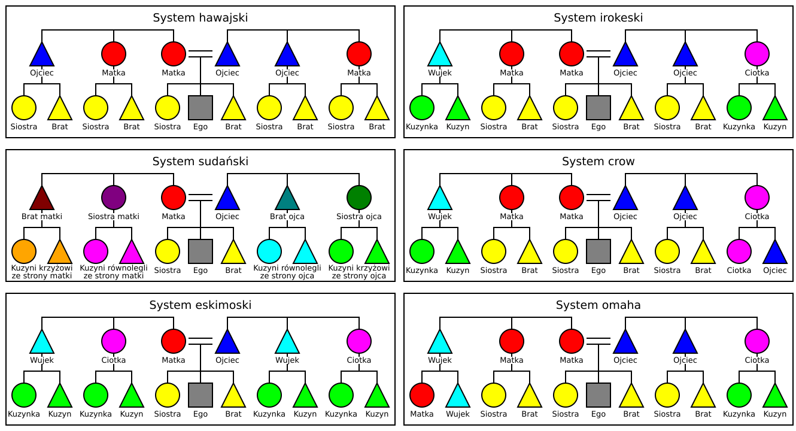
Zestawienie tabelaryczne
| hawajski | sudański | eskimoski | irokeski | crow | omaha | |
|---|---|---|---|---|---|---|
| F | ojciec | ojciec | ojciec | ojciec | ojciec | ojciec |
| FB | ojciec | stryj | wujek | ojciec | ojciec | ojciec |
| MB | ojciec | wuj | wujek | wujek | wujek | wujek |
| M | matka | matka | matka | matka | matka | matka |
| MZ | matka | sioła | ciotka | matka | matka | matka |
| FZ | matka | ciotka | ciotka | ciotka | ciotka | ciotka |
| B | brat | brat | brat | brat | brat | brat |
| FBS | brat | brat stryjeczny | kuzyn | brat | brat | brat |
| MZS | brat | brat siołeczny | kuzyn | brat | brat | brat |
| FZS | brat | brat cioteczny | kuzyn | kuzyn | ojciec | kuzyn |
| MBS | brat | brat wujeczny | kuzyn | kuzyn | kuzyn | wujek |
| Z | siostra | siostra | siostra | siostra | siostra | siostra |
| FBD | siostra | siostra stryjeczna | kuzynka | siostra | siostra | siostra |
| MZD | siostra | siostra siołeczna | kuzynka | siostra | siostra | siostra |
| FZD | siostra | siostra cioteczna | kuzynka | kuzynka | ciotka | kuzynka |
| MBD | siostra | siostra wujeczna | kuzynka | kuzynka | kuzynka | matka |
| wspólne dla wszystkich | w poszczególnych typach także | ||||||
|---|---|---|---|---|---|---|---|
| hawajski | sudański | eskimoski | irokeski | crow | omaha | ||
| „ojciec” | ojciec | brat ojca brat matki | — | — | brat ojca | brat ojca syn siostry ojca | brat ojca |
| „stryjek” | — | — | brat ojca | — | — | — | — |
| „wujek” | — | — | brat matki | brat ojca brat matki | brat matki | brat matki | brat matki syn brata matki |
| „matka” | matka | siostra matki siostra ojca | — | — | siostra matki | siostra matki | siostra matki córka brata matki |
| „sioła” | — | — | siostra matki | — | — | — | — |
| „ciotka” | — | — | siostra ojca | siostra matki siostra ojca | siostra ojca | siostra ojca córka siostry ojca | siostra ojca |
| „brat” | brat | kuzyn | — | — | kuzyn równoległy | kuzyn równoległy | kuzyn równoległy |
| „kuzyn” | — | — | * | kuzyn | kuzyn krzyżowy | syn brata matki | syn siostry ojca |
| „siostra” | siostra | kuzynka | — | — | kuzynka równoległa | kuzynka równoległa | kuzynka równoległa |
| „kuzynka” | — | — | * | kuzynka | kuzynka krzyżowa | córka brata matki | córka siostry ojca |
* W tabeli pominięto nazwy poszczególnych kuzynów w typie sudańskim
Kuzyn równoległy to syn brata ojca (brat stryjeczny) lub siostry matki (brat siołeczny), kuzyn krzyżowy to syn brata matki (brat wujeczny) lub siostry ojca (brat cioteczny), analogicznie określane są kuzynki równoległe i krzyżowe
Typ eskimoski
Cechy charakterystyczne:
- istnieją osobne terminy dla rodziców i dla ich rodzeństwa (ciotek i wujków),
- braci ojca i matki nazywa się tym samym terminem, podobnie siostry ojca i matki,
- istnieje wspólny termin dla kuzynów, odróżniający ich od rodzeństwa.
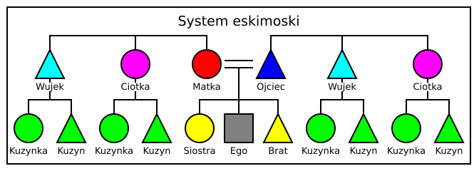
Typ eskimoski występuje dziś powszechnie w wielu znanych językach świata, w tym we współczesnej polszczyźnie.
Język polski (współczesny)
F – ojciec,
M – matka,
FB = MB (= FZH = MZH) – wujek,
FZ = MZ (= FBW = MBW) – ciotka,
B – brat,
Z – siostra,
FBS = FZS = MBS = MZS – kuzyn,
FBD = FZD = MBD = MZD – kuzynka.
Inne terminy:
P – rodzic, G – rodzeństwo, C – dziecko (potomek), E – małżonek, S – syn, D – córka, H – mąż, W – żona, ZH = HB = WB = HZH = WZH – szwagier, HZ = WZ = HBW = WBW – szwagierka, BW – bratowa, BS – bratanek, BD – bratanica, ZS – siostrzeniec, ZD – siostrzenica, FF = MF – dziadek, FM = MM – babka, SS = DS – wnuk, SD = DD – wnuczka, HF = WF – teść, HM = WM – teściowa, DH – zięć, SW – synowa.
Współczesna terminologia (bardzo zubożona w porównaniu ze stanem sprzed wieków) spełnia dokładnie kryteria przynależności do typu eskimoskiego. Wśród innych terminów (spoza kryterium przynależności do typu eskimoskiego) osobliwością jest odróżnianie żony brata (bratowa) od żony brata męża/żony (szwagierka) przy braku odróżnienia męża siostry od męża siostry męża/żony (szwagier). Nie ma prostego terminu dla braci i sióstr małżonków rodzeństwa; używa się terminów złożonych: ZHB (= HZHB = WZHB) – brat szwagra, ZHZ (= HZHZ = WZHZ) – siostra szwagra, BWB – brat bratowej, BWZ – siostra bratowej (por. też HBWB = WBWB – brat szwagierki, HBWZ = WBWZ – siostra szwagierki). Osobliwy (i czasem kłopotliwy) jest też brak wspólnego terminu dla dzieci rodzeństwa (bratanek ≠ siostrzeniec, podobnie bratanica ≠ siostrzenica).
Tradycyjny system terminologii pokrewieństwa jest dziś wciąż częściowo używany. Dawniej terminy brat i siostra odnosiły się także do kuzynów (dziś używane słowa kuzyn, kuzynka nie były znane), jak w typie hawajskim (i tak zostały tu zinterpretowane), jedynie w razie potrzeby mówiono o bracie rodzonym, stryjecznym, wujecznym, ciotecznym (analogicznie o siostrach). Odróżniano jednak rodziców od ich rodzeństwa, a nawet brata ojca od brata matki, jak w typie sudańskim. Siostrę ojca i siostrę matki określano tym samym terminem, jak w typie eskimoskim (jednak dla wcześniejszego stanu rekonstruuje się niezaświadczone odróżnienie według typu sudańskiego: FZ – ciota, MZ – sioła, analogicznie FZH — pociot, MZH – posiół). Osobliwością były terminy synowiec, synowica (syn lub córka brata) używane przez stryja (brata ojca) wobec brataniec, bratanica (także syn lub córka brata) używanych przez ciotę (siostrę ojca). Odróżniano ściśle różne rodzaje powinowactwa, dla których dziś używa się terminów szwagier (niegdyś dziewierz, szurzy, paszenog, swak) i szwagierka (zełwa, świeść, jątrew). Nie było prostych terminów dla rodzeństwa małżonków braci i sióstr ani dla męża siostry męża (zełwy) i żony brata żony (szurzego), wtórnie pojawiły się: HZH – zełwin, WBW – szurzyna.
Język angielski
F – father,
M – mother,
FB = MB (= FZH = MZH) – uncle,
FZ = MZ (= FBW = MBW) – aunt,
B – brother,
Z – sister,
FBS = FZS = MBS = MZS = FBD = FZD = MBD = MZD – cousin.
Inne terminy:
P – parent, G – sibling, C – child, S – son, D – daughter, E – spouse, H – husband, W – wife, ZH = HB = WB = HZH = WZH = BWB = ZHB – brother-in-law, BW = HZ = WZ = HBW = WBW = BWZ = ZHZ – sister-in-law (fakultatywnie HZH = WZH = BWB = ZHB – co-brother-in-law, HBW = WBW = BWZ = ZHZ – co-sister-in-law), BS = ZS – nephew, BD = ZD – niece, PP – grandparent, FF = MF – grandfather, FM = MM – grandmother, SS = DS – grandson, SD = DD – granddaughter, HF = WF – father-in-law, HM = WM – mother-in-law, DH – son-in-law, SW – daughter-in-law.
Współczesna terminologia (bardzo zubożona w porównaniu z językiem staroangielskim) spełnia dokładnie kryteria przynależności do typu eskimoskiego. Zwraca uwagę termin cousin, który nie wyraża płci. W porównaniu z językiem polskim istnieje wspólny termin dla bratanka i siostrzeńca, a także dla bratanicy i siostrzenicy. Terminy brother-in-law i sister-in-law są szersze niż w polskim, nie ma bowiem osobnego terminu oznaczającego bratową, a małżonkowie i rodzeństwo szwagrów również bywają określani w ten sposób.
Język ju|’hoansi
F – ba,
M – tai,
FB = MB = PPF – tsu,
FZ = MZ = PPM – ga,
B+ – ko,
Z+ – kwi,
B− = Z− – tsin,
FBS (+) = FZS (+) = MBS (+) = MZS (+) = FF = MF – kuna,
FBS (−) = FZS (−) = MBS (−) = MZS (−) = SS = DS – kuma,
FBD (+) = FZD (+) = MBD (+) = MZD (+) = FM = MM – tun
FBD (−) = FZD (−) = MBD (−) = MZD (−) = SD = DD – tuma.
Inne terminy:
S – ha, D – hai, BS = ZS = BD = ZD = CCC – tsuma (dla mężczyzny), gama (dla kobiety).
Typ sudański
Cechy charakterystyczne:
- istnieją osobne terminy dla rodziców i dla ich rodzeństwa (ciotek i wujków),
- braci ojca i matki nazywa się inaczej, podobnie siostry ojca i matki,
- nie ma wspólnego terminu dla kuzynów, każdy z rodzajów ma własne określenie.
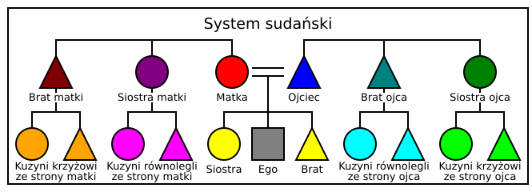
Typ sudański był i jest pospolity w różnych językach świata.
Język łaciński
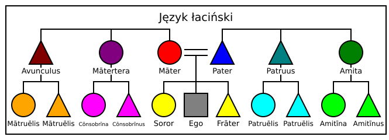
W nawiasach terminy niestandardowe i nieklasyczne, ale używane w tekstach łacińskich w różnych okresach
| F – pater | M – māter | |
| FB – patruus (barbās) | FZ – amita | |
| MB – avunculus | MZ – mātertera | |
| B – frāter | Z – soror | |
| FBS – patruēlis (cōnsobrīnus) | FBD – patruēlis (cōnsobrīna) | |
| FZS – amitīnus (sobrīnus, cōnsobrīnus) | FZD – amitīna (sobrīna, cōnsobrīna) | |
| MBS – mātruēlis (cōnsobrīnus) | MBD – mātruēlis (cōnsobrīna) | |
| MZS – cōnsobrīnus (sobrīnus) | MZD – cōnsobrīna (sobrīna) |
Inne terminy:
| S – fīlius (nātus) | D – fīlia (nāta) | |
| H – marītus (conjunx) | W – uxor (marīta, conjunx, nūpta) | |
| HB – lēvir | HZ – glōs | |
| HZH – marītus glōris | HBW – janitrīx | |
| WB – frāter uxōris (lēvir) | WZ – soror uxōris (glōs) | |
| ZH – sorōrius (lēvir, marītus sorōris) | BW – frātria (janitrīx, glōs, uxor frātris) | |
| BS – frātruēlis (frātruus, nepōs) | BD – frātruēlis (neptis, neptia) | |
| ZS – sobrīnus (nepōs) | ZD – sobrīna (neptis, neptia) | |
| PF – avus | PM – avia (ava) | |
| FF – avus paternus | FM – avia paterna | |
| MF – avus māternus | MM – avia māterna | |
| PPF – proavus | PPM – proavia | |
| PPPF – abavus | PPPM – abavia | |
| PPPPF – atavus | PPPPM – atavia | |
| CS – nepōs | CD – neptis (neptia) | |
| CCS – prōnepōs | CCD – prōneptis | |
| CCCS – abnepōs | CCCD – abneptis | |
| EF – socer (patraster) | EM – socrus (socra) | |
| EPF – prōsocer | EPM – prōsocrus | |
| EPPF – absocer | EPPM – absocrus | |
| DH – gener (fīliaster) | SW – nurus (fīliastra) | |
| CDH – prōgener | CSW – prōnurus |
Język polski (system rekonstruowany)
W udokumentowanych źródłach nie odróżnia się siostry ojca od siostry matki i każdą z nich nazywa ciotką (pierwotnie ciotą). Na podstawie materiałów w języku staroczeskim oraz pewnych nazwisk możemy jednak zrekonstruować pierwotną, odrębną nazwę siostry matki. Tak zrekonstruowany staropolski system terminów pokrewieństwa można uznać za należący do typu sudańskiego, jeśli terminy w rodzaju „brat cioteczny” potraktujemy jako proste.
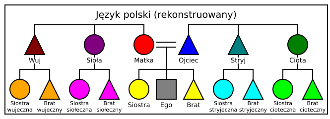
F – ojciec (ociec), M – matka, FB – stryj, MB – wuj, FZ – ciota, MZ – sioła, B – brat, Z – siostra, FBS – brat stryjeczny, FZS – brat cioteczny, MBS – brat wujeczny, MZS – brat siołeczny, FBD – siostra stryjeczna, FZD – siostra cioteczna, MBD – siostra wujeczna, MZD – siostra siołeczna.
Zaświadczony tradycyjny polski system terminów pokrewieństwa miał charakter mieszany (zob. niżej), system współczesny należy do typu eskimoskiego.
Język turecki
F – baba,
M – anne, ana,
FB – amca,
MB – dayı,
FZ – hala,
MZ – teyze,
B – kardeş, erkek kardeş,
B+ – abi,
Z – kız kardeş,
Z+ – abla,
FBS – amca oğlu, amcazade, kuzen,
FZS – hala oğlu, halazade, kuzen,
MBS – dayı oğlu, dayızade, kuzen,
MZS – teyze oğlu, teyzezade, kuzen,
FBD – amca kızı, amcazade, kuzen,
FZD – hala kızı, halazade, kuzen,
MBD – dayı kızı, dayızade, kuzen,
MZD – teyze kızı, teyzezade, kuzen.
Inne terminy:
P – ebeveyn, annevebaba, G – kardeş, C – çocuk, S – oğul, D – kız, E – eş, H – koca, W – karı, ZH = HB = WB – kayın, BW = WZ – baldız (dla mężczyzny), BW = HZ – görümce (dla kobiety), FZH = MZH – enişte, FBW = MBW – yenge, BS = ZS = BD = ZD – yeğen, FF = MF – dede, büyükbaba, FM – babaanne, nine, büyükanne, MM – anneanne, nine, büyükanne, SS = DS = SD = DD – torun, HF = WF – kaynata, kayınbaba, HM = WM – kaynana, kayınvalide, DH – güvey, damat, SW – gelin.
Typ hawajski
Cechy charakterystyczne:
- rodzice nie są odróżniani od ich rodzeństwa (ciotek i wujków),
- rodzeństwo nie jest odróżniane od kuzynów.
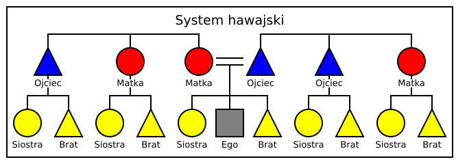
Typ hawajski występuje rzadko w czystej postaci.
Język hawajski
Jeśli rodzeństwo i kuzyni są tej samej płci, co osoba mówiąca, obowiązują specjalne terminy, niezależne od płci (bracia i kuzyni mężczyzny nazywani są tak samo, jak siostry i kuzynki kobiety), ale zależne od względnego wieku. Są to jakby „starsze ja” (kaikua’ana) i „młodsze ja” (kaikaina). Dla rodzeństwa i kuzynostwa płci przeciwnej istnieją terminy odrębne dla każdej z płci, ale niezależne od wieku (brat lub kuzyn kobiety – kaikuane, siostra lub kuzyn mężczyzny – kaikuahine).
F = FB = MB – makuakane,
M = FZ = MZ – makuahine,
B = FBS = FZS = MBS = MZS dla kobiety – kaikuane,
Z = FBD = FZD = MBD = MZD dla mężczyzny – kaikuahine,
B+ = FBS(+) = FZS(+) = MBS(+) = MZS(+) dla mężczyzny oraz Z+ = FBD(+) = FZD(+) = MBD(+) = MZD(+) dla kobiety – kaikua’ana (jeśli starszy / starsza od probanda),
B− = FBS(−) = FZS(−) = MBS(−) = MZS(−) dla mężczyzny oraz Z− = FBD(−) = FZD(−) = MBD(−) = MZD(−) dla kobiety – kaikaina (jeśli młodszy / młodsza od probanda).
Inne terminy:
S = BS = ZS – keikikane, D = BD = ZD – kaikamahini.
Typ irokeski
Cechy charakterystyczne:
- rodzice nie są odróżniani od ich rodzeństwa tej samej płci (ojciec od swego brata, matka od swej siostry), ale odróżniani od rodzeństwa płci przeciwnej,
- rodzeństwo nie jest odróżniane od kuzynów równoległych (potomstwa braci ojca oraz sióstr matki), ale jest odróżniane od kuzynów krzyżowych, którzy określani są jednym terminem.
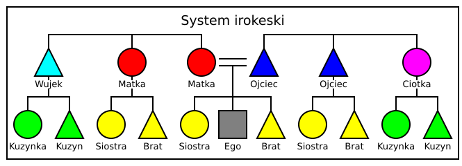
Odmiany typu irokeskiego
Podtyp irokeski właściwy
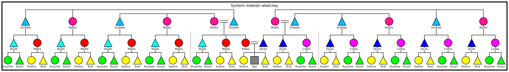
Podtyp yafar
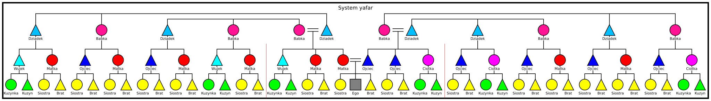
Podtyp drawidyjski
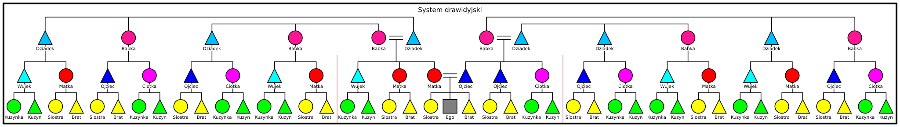
Podtyp kuma
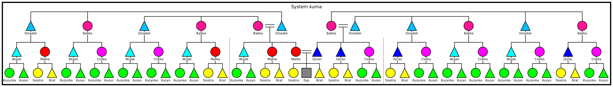
Zestawienie tabelaryczne
| irokeski wł. | yafar | drawidyjski | kuma | ||
|---|---|---|---|---|---|
| FF, MF, FFB, MFB, FMB, MMB | dziadek | dziadek | dziadek | dziadek | dziadek, brat dziadka, brat babki |
| FM, MM, FMZ, MMZ, FFZ, MFZ | babka | babka | babka | babka | babka, siostra babki, siostra dziadka |
| F, FB, FFBS, FMZS | ojciec | ojciec | ojciec | ojciec | ojciec, brat ojca, kuzyn równoległy ojca |
| FFZS, FMBS | ojciec | ojciec | wujek | wujek | kuzyn krzyżowy ojca |
| MFZS, MMBS | wujek | ojciec | ojciec | wujek | kuzyn krzyżowy matki |
| MB, MFBS, MMZS | wujek | wujek | wujek | wujek | brat matki, kuzyn równoległy matki |
| M, MZ, MFBD, MMZD | matka | matka | matka | matka | matka, siostra matki, kuzynka równoległa matki |
| MFZD, MMBD | matka | matka | ciotka | ciotka | kuzynka krzyżowa matki |
| FFZD, FMBD | ciotka | matka | matka | ciotka | kuzynka krzyżowa ojca |
| FZ, FFBD, FMZD | ciotka | ciotka | ciotka | ciotka | siostra ojca, kuzynka równoległa ojca |
| G | rodzeństwo | rodzeństwo | rodzeństwo | rodzeństwo | inne dzieci „ojca” lub „matki” |
| FBC, MZC | |||||
| FFBSC, FMZSC, MFBDC, MMZDC | |||||
| FFZSC, FMBSC, MFZDC, MMBDC | rodzeństwo | rodzeństwo | kuzynostwo | kuzynostwo | dziecko kuzyna krzyżowego ojca lub kuzynki krzyżowej matki |
| FFZDC, FMBDC, MFZSC, MMBSC | kuzynostwo | rodzeństwo | rodzeństwo | kuzynostwo | dziecko kuzynki krzyżowej ojca lub kuzyna krzyżowego matki |
| FZC, MBC | kuzynostwo | kuzynostwo | kuzynostwo | kuzynostwo | dzieci „wujka” lub „ciotki” |
| FFBDC, FMZDC, MFBSC, MMZSC |
| wszystkie irokeskie | ponadto tylko w poszczególnych podtypach | ||||
|---|---|---|---|---|---|
| irokeski wł. | yafar | drawidyjski | kuma | ||
| „dziadek” | dziadek brat dziadka | brat babki | brat babki | — | — |
| „prawujek” | — | — | — | brat babki | brat babki |
| „babka” | babka siostra babki | siostra dziadka | siostra dziadka | — | — |
| „praciotka” | — | — | — | siostra dziadka | siostra dziadka |
| „ojciec” | ojciec brat ojca kuzyn równoległy ojca | kuzyn krzyżowy ojca | kuzyn krzyżowy ojca kuzyn krzyżowy matki | kuzyn krzyżowy matki | — |
| „wujek” | brat matki kuzyn równoległy matki | kuzyn krzyżowy matki | — | kuzyn krzyżowy ojca | kuzyn krzyżowy ojca kuzyn krzyżowy matki |
| „matka” | matka siostra matki kuzynka równoległa matki | kuzynka krzyżowa matki | kuzynka krzyżowa matki kuzynka krzyżowa ojca | kuzynka krzyżowa ojca | — |
| „ciotka” | siostra ojca kuzynka równoległa ojca | kuzynka krzyżowa ojca | — | kuzynka krzyżowa matki | kuzynka krzyżowa matki kuzynka krzyżowa ojca |
We wszystkich typach „bratem” lub „siostrą” jest inne dziecko „ojca” lub „matki”, natomiast „kuzynem” lub „kuzynką” dziecko „wujka” lub „ciotki”
Język yanomamo
F = FB – haya,
M = MZ – naya,
MB – soaya,
FZ – yesiya,
B = FBS = MZS – eiwa,
Z = FBD = MZD – amiwa,
dla mężczyzny: FZS = MBS = WB = ZH – soriwa, FZD = MBD = W – suaboya, S = BS – teeya, D = BD – ihiruya, ZS – tataya, ZD – heckamaya;
dla kobiety: FZS = MBS = H – heroya, FZD = MBD = HZ = BW – natohiya, S = ZS – teeya, D = ZD – ihiruya, BS – tataya, BD – heckamaya.
Język tamilski
F – tantai, appā, appaṉ, attaṉ,
M – tāy, ammā, aṉṉai,
FB+ = MZ+H – periyappaṉ,
FB− = MZ−H – ciṟṟappaṉ,
MB = FZH = WF – tāymāmaṉ, tāymāmā, māmaṉ,
FZ = MBW – attai,
MZ+ = FB+W – periyammā,
MZ− = FB−W – ciṉṉammā, citti,
B – cakōtaraṉ,
B+ = FBS (+) = MZS (+) = WZH (+) – aṇṇaṉ, tamaiyaṉ,
B− = FBS (−) = MZS (−) = WZH (−) – tampi,
Z – cakōtari,
Z+ = FBD (+) = MZD (+) = HBW (+) – akkāḷ, akkai, akkacci, aṇṇi,
Z− = FBD (−) = MZD (−) = HBW (−) – taṅkai, taṅkāḷ, taṅkacci.
dla mężczyzny: W – maṉaivi, ZS – marumakaṉ, ZD – marumakaḷ;
dla kobiety: H – kaṇavaṉ, BS – marumakaṉ, BD – marumakaḷ.
Inne terminy:
S – makaṉ, D – makaḷ, PF – pāṭṭaṉ, tāttā, MF – ciyyāṉ, PM – pāṭṭi, FM – appāyi, appācci, MM – ammāyi, ammācci, CS – peyaraṉ, pēraṉ, CD – peyartti, pērtti, pētti, B+W = WZ+ – attācci, aṇṇi, B−W = WZ− – koḻunti, koḻuntiyār, macciṉi, macciṉacci, macciṉicci, maccāḷ, macci, HZ – attācci, FBS = MZS = FBD = MZD – paṅkāḷi, FZS = MBS = FZD = MBD = muṟaipacaṅkam, FZS = MBS – attāṉ, maittuṉaṉ, macciṉaṉ, maccuṉaṉ, maccāṉ, FZD = MBD – attācci, macciṉi, macciṉacci, macciṉicci, maccāḷ, macci, maittuṉi, HB+ – mutāru, HB− – koḻuntaṉ, koḻuntaṉār, WB (+) = Z+H – attāṉ, maittuṉaṉ, WB (−) = Z−H – macciṉaṉ, maccuṉaṉ, maccāṉ, WZH – cakalaṉ, cakalappāṭi, cakalai, HBW – ōyppiṭiyāḷ, ōyppaṭiyāḷ, ōrakatti, ōruppaṭi, ōppiṭiyāḷ, HF = WF – māmaṉ, mātulaṉ, HM = WM – attai, DH = WBS – marumakaṉ, SW = WBD – marumakaḷ.
Typ crow
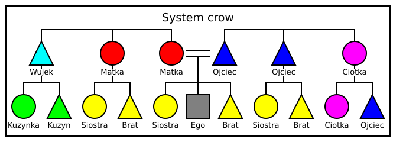
Typ omaha
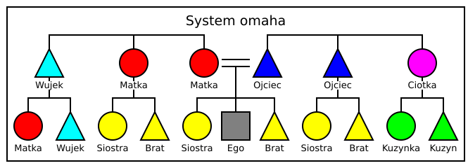
Typ mieszany
Spełnia tylko niektóre kryteria podane wyżej, zatem łączy właściwości różnych typów.
Język polski (tradycyjny)
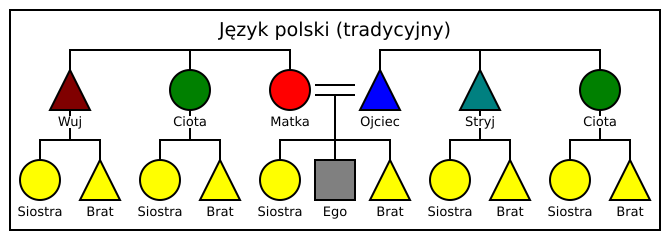
F – ojciec (ociec), M – matka, FB – stryj, MB – wuj, FZ = MZ – ciota, B = FBS = FZS = MBS = MZS – brat, Z = FBD = FZD = MBD = MZD – siostra.
Inne terminy:
S – syn, D – córa, H – mąż (małżonek), W – żona, HB – dziewierz, WB – szurzy, HZ – zełwa, WZ – świeść, HBW – jątrew, WZH – paszenog, ZH – swak, BW – bratowa, FZH = MZH – pociot, FBW – stryjna, MBW – wujna, BS – synowiec (dla mężczyzny) lub brataniec (dla kobiety), BD – synowica (dla mężczyzny) lub bratanica (dla kobiety), ZS – siostrzeniec, ZD – siostrzenica, FF = MF – dziad, FM = MM – baba, SS = DS – wnuk, SD = DD – wnuka, HF – świekier (świekr), HM – świekra (świekrew), WF – teść (cieść), WM – teścia (ćcia), DH – zięć, SW – snecha.
Tradycyjny system terminologii pokrewieństwa jest dziś wciąż częściowo używany. Dawniej terminy brat i siostra odnosiły się także do kuzynów (dziś używane słowa kuzyn, kuzynka nie były znane), jak w typie hawajskim (i tak zostały tu zinterpretowane), jedynie w razie potrzeby mówiono o bracie rodzonym, stryjecznym, wujecznym, ciotecznym (analogicznie o siostrach). Odróżniano jednak rodziców od ich rodzeństwa, a nawet brata ojca od brata matki, jak w typie sudańskim. Siostrę ojca i siostrę matki określano tym samym terminem, jak w typie eskimoskim (jednak dla wcześniejszego stanu rekonstruuje się niezaświadczone odróżnienie według typu sudańskiego: FZ – ciota, MZ – sioła, analogicznie FZH — pociot, MZH – posiół). Osobliwością były terminy synowiec, synowica (syn lub córka brata) używane przez stryja (brata ojca) wobec brataniec, bratanica (także syn lub córka brata) używanych przez ciotę (siostrę ojca). Odróżniano ściśle różne rodzaje powinowactwa, dla których dziś używa się terminów szwagier (niegdyś dziewierz, szurzy, paszenog, swak) i szwagierka (zełwa, świeść, jątrew). Nie było prostych terminów dla rodzeństwa małżonków braci i sióstr ani dla męża siostry męża (zełwy) i żony brata żony (szurzego), wtórnie pojawiły się: HZH – zełwin, WBW – szurzyna.
Język fiński
F – isä,
M – äiti,
FB – setä,
MB – eno,
FZ = MZ – täti,
B – veli,
Z – sisar, sisko,
PGC – serkku,
FBS = FBD = FZS = FZD – nepas,
MBS = MBD = MZS = MZD – orpana.
Inne terminy:
P – vanhemmat (lm.), G – sisarus, C – lapsi, S – poika, D – tytär, tyttö, E – puoliso, H – aviomies, mies, W – vaimo, HB = WB = ZH = HZH = WZH – lanko, suoveri, näälämies, HB – kyty, HZ = WZ = BW = HBW = WBW – käly, HZ – nato, BS – veljenpoika, BD – veljentytär, ZS – sisarenpoika (także jako BS), ZD – sisarentytär, sisarentyttö (także jako BD), siskontytär, siskontyttö, PP – isovanhemmat (lm.), FF = MF – isoisä, FM = MM – isoäiti, CC – lapsenlapsi, SS – pojanpoika, DS – tyttärenpoika, SD – pojantytär, DD – tyttärentytär, tytöntyttö, EP – appivanhemmat (lm.), HF = WF – appi, HM = WM – anoppi, DH – vävy, SW – miniä.
Język koreański
Na pierwszym miejscu forma honoryfikatywna.
F – abeoji, appa,
M – eomeoni, eomma,
FB – chinsamchon, samchon,
FB+ – keun abeoji, keun appa (najstarszy), baegbu, jungbu,
FB− – jag-eun-abeoji, jag-eun-appa (najmłodszy), sugbu,
MB – oesamchon, oesugbu,
FZ – gomo,
MZ – imo,
B – hyeongje,
B+ – hyeong (dla brata), oppa (dla siostry),
B− – namdongsaeng, dongsaeng,
Z – jamae,
Z+ – nuna (dla brata), eonni (dla siostry),
Z− – yeodongsaeng,
PGC – sachon.
Inne terminy:
P – bumo, G – hyeongjejamae, C – janyeo, S – adeul, D – ttal, E – bae-uja, bubu, H – ju-in, bakkat yangban, ju-in yangban, nampyeon, aebi, W – bu-in, ansaram, anae, emi, Z+H – maehyeong (dla mężczyzny), hyeongbu (dla kobiety), Z−H – maeje (dla mężczyzny), jebu (dla kobiety), B+W – hyeongsunim, hyeongsu (dla mężczyzny), sae-eonni (dla kobiety), B−W – jesu (dla mężczyzny), olke (dla kobiety), HB+ – ajubeonim, HB+W – hyeongnim, HB− – sidongsaeng, HB−W – dongseo, HZ+ – hyeongnim, eonni, HZ+H – seobangnim, HZ− – agassi, assi, HZ−W – seobangnim, WB+ – hyeongnim, WB+W – ajumeonim, WB− – cheonam, WB−W – cheonamdaeg, WZ+ – cheohyeong, WZ+H – hyeongnim, WZ− – cheoje, FB+W – keun eomeoni, keun eomma, baegmo, jungmo, FB−W – jag-eun-eomeoni, jag-eun-eomma, sugmo, FZH – gomobu, MBW – oesugmo, MZH – imobu, BS = ZS – joka, BD = ZD – joka, jokattal, PP – jobumo, PF – jobu, PM – jomo, FF – har-abeoji, FM – halmeoni, MF – oehar-abeoji, MM – oehalmeoni, CC – sonju, SS = DS – sonja, SD = DD – sonnyeo, HP – jabumo, WP – cheobumo, HF – si-abeoji, WF – jang-in, HM – si-eomeoni, WM – jangmo, DH – sawi, seobang, SW – myeoneuri, emi.